'Infierno blanco', lobos sanguinarios y engañosos
Wed, 15 Feb 2012 11:19:12 GMT
Los parajes nevados tienen un potencial cinematográfico difícil de igualar, en especial para la creación de suspense o terror. Es innegable que ver fluir la sangre sobre la nieve tiene una fuerza dramática impresionante, de ahí que me sorprenda que no sea algo que haya sigo explotado lo suficiente por el slasher (alguno hay, pero poca cosa), donde no me consta que haya ningún psychokiller suficientemente icónico que se haya aprovechado de ello. Sin embargo, John Carpenter sí que supo aprovechar todas sus posibilidades para la creación esa obra maestra que es ‘La cosa (El enigma de otro mundo)’, aún hoy su mejor trabajo y quizá también la mejor película de terror de la historia. Sin embargo, en los últimos tiempos sencillamente no está muy de moda utilizar un buen paisaje poblado de nieve para aislar a los personajes y a partir de ahí decidir el tono que dar a lo que se nos cuenta. Los casos más populares que me vienen a la mente son ‘Whiteout’ (que ni llegó a estrenarse en cines en España de lo horripilante que era) y la precuela de la cinta de Carpenter, la cual mejor olvidar su existencia dada su alarmante mediocridad.
Ese vacío es algo que viene a llenar ‘Infierno blanco’ (la cual no tiene nada que ver con los otros dos largometrajes que ostentan ese mismo título en España), una película que toma como base una premisa similar a los hechos reales que dieron lugar a ‘¡Viven!’, pero con una finalidad distinta: ¿Qué sucedería si los escasos supervivientes de un accidente de avión que ya tienen que lidiar con el peligro de morir por las bajísimas temperaturas se convirtieran en el objetivo de una manada de lobos que los ve como intrusos en su territorio? Ese punto de partida es lo que más ha potenciado la campaña de promoción de la película para atrapar a unos espectadores ávidos de ver truculentos ataques de lobos sanguinarios que vayan mermando el número de supervivientes, pero ¿es ‘Infierno blanco’ una sucesión más o menos efectiva de matanzas que demoniza la figura del lobo en aras del entretenimiento o estamos ante algo más que ver a lobos morder hasta la muerte a pobres incautos?
Lo primero que conviene avisar es que si eres una de esas personas que no soportan a Liam Neeson como actor, mejor vayas olvidando la existencia de ‘Infierno blanco’, ya que su peso en la función es similar al de George Clooney en ‘Los descendientes’, es decir, Neeson es el Dios de la función y todo se filtra al espectador a través de su perspectiva. Y lo mejor de todo es que Neeson, que ya se había ganado una reputación como eficaz protagonista de thrillers comerciales tras el éxito de ‘Venganza’, ofrece una actuación estupenda, siendo capaz de transmitir todas las emociones al espectador por las que va pasando Ottway, el protagonista de la función. Y es que resulta curioso que ‘Infierno blanco’ sitúe como persona de la que dependen el resto de supervivientes a alguien con tendencias suicidas, un hombre cuyo dolor le hace desear la muerte, pero ésta le es esquiva (¿Qué probabilidades hay de ser uno de los supervivientes de un trágico accidente de avión?) pese a convivir a diario con ella (su trabajo consistía en ejercer como francotirador y ejecutar a esos lobos con los que ahora tiene que enfrentarse de nuevo). Quizá sea un tanto censurable hacer esta aseveración, pero a buen seguro la muerte de su esposa Natasha Richardson hace casi tres años ha sido la causante de que Neeson nos ofrezca una interpretación al nivel de sus mejores trabajos en una cinta, no vamos a engañarnos, con pocas ambiciones. Eso sí, resulta curioso que los flashbacks relacionados con el antiguo amor de Ottway sean el elemento más frágil de su trabajo.
El problema del superlativo trabajo de Neeson es que prácticamente aniquila cualquier posibilidad de que el resto de personajes tengan el más mínimo interés. Tampoco ayuda nada que en su descripción se abuse de forma desmesurada de los tópicos, dando como resultado que únicamente James Badge Dale tiene una escena con algo de entidad en su última aparición. El resto se limitan a ser víctimas potenciales del asedio de los lobos, ya que incluso el que desafía el liderazgo de Ottway carece de un interés más allá de ser un contrapunto necesario para que la rutina no se apodere aún más de la progresión dramática del relato. No es que sus interpretaciones sean malas, simplemente parten con tal desventaja que nunca llega a importarnos demasiado lo que les pase.
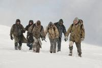
Detrás de las cámaras encontramos a Joe Carnahan, un realizador que no termina de encontrar su sitio tras ‘Narc’, su prometedor debut, a la cual siguieron esa tontería que pretendía ser la respuesta americana a las primeras películas de Guy Ritchie que es ‘Ases calientes’ y el divertido paso a la gran pantalla del televisivo ‘El equipo A’. Cuesta creer que esta última película tenga tanta relevancia en los primeros pasos de ‘Infierno blanco’, pero lo cierto es que el protagonista iba a ser Bradley Cooper, pero fue finalmente sustituido por Neeson, en lo que ha acabado siendo un acierto similar a la del señor que inventó la rueda. En ‘Infierno blanco, Carnahan evita ceder a la tentación de potenciar el elemento paisajístico y cautivar así al espectador con la belleza natural de los escenarios canadienses donde se rodó, ya que decide usar muchos planos cerrados, potenciando así la sensación de aislamiento de los protagonistas pese a encontrarse en un lugar inmenso en el que lo que realmente llama la atención es su presencia.
Más allá de eso, conviene llamar la atención sobre la escasa capacidad de Carnahan para crear un convincente clima de suspense, ya que el guión que él mismo firma junto a Ian Mackenzie Jeffers (el autor del relato en el que se basa ‘Infierno blanco’) abusa demasiado del cliché y los lugares comunes. Tras el accidente, la película pronto se convierte en un viaje previsible en el que lo único que llama la atención es predecir quién va a ser la siguiente víctima y cómo va a morir (y es que no todos son asesinados por lobos sedientos de sangre humana). Es ahí donde aparece el otro grave problema de ‘Infierno blanco’, y es que la historia se alarga demasiado, oscilando a partir de la mitad de metraje entre lo repetitivo y lo cansino. Un par menos de supervivientes hubiese ahorrado a la película unos 20 minutos de metraje que le hubiesen venido de maravilla.
Algunos os estaréis preguntando que cuándo voy a hablar de los lobos si éstos parecían que iban a ser el principal aliciente, pero es que sus apariciones en ‘Infierno blanco’ son mucho más escasas de lo que pueda parecer, así que si vuestro único aliciente era ver a lobos sanguinarios podéis ir tachando la película de vuestra lista de futuros visionados. Y es que se prefiere jugar con su peligrosidad como una amenaza siempre presente, pero que cuando se hace visible resulta letal, de ahí que los ataques de los animales sean algo fulminante que no deje espacio para responder a sus víctimas. Sí que conviene destacar la notable escena en la que básicamente vemos los ojos de varios de los integrantes de la manada, ya que quizá sea el único momento de calma tensa en el que llegamos a tener constancia física de su presencia.
Greg Nicotero y Howard Berger, dos genios en lo suyo, son los responsables del diseño de las criaturas, a las cuales consiguen dotar de un realismo tremendo, al mismo tiempo que tienen un aspecto implacable que haría pensárselo a cualquiera dos veces antes de cruzarse en su camino. Éste es el otro punto en el que brilla la película, siendo una pena que, por necesidades de la historia, sus apariciones sean tan escasas. Quizá unos cuantos millones más de presupuesto hubiesen venido bien para poder tenerles más minutos en pantalla.
No han faltado las críticas de asociaciones en defensa de los animales hacia la forma que tiene ‘Infierno blanco’ de retratar a estos animales, ya que sí que se ofrece una visión un tanto radical de los mismos, pero lo cierto es que los lobos no hacen nada muy diferente a lo que haríamos nosotros si de repente apareciesen unos animales salvajes en plena ciudad: Acabar con ellos. Además, la cinta se centra más en retratar la lucha por la supervivencia (repito que no todas las muertes están originadas por el ataque de estos animales) que en ensañarse mostrando a los lobos zampándose a humanos incautos.
En definitiva, ‘Infierno blanco’ es una nueva confirmación de lo buen actor que es Liam Neeson, y también que ese talento puede servir perfectamente para ofrecer una estupenda actuación en una producción eminentemente comercial. La pega es que, con la salvedad de los propios lobos, el resto de la película no está a la altura del trabajo de Neeson, en especial por la necesidad del cine reciente de hacer cintas de duraciones muy por encima de lo que la historia necesita. Y es que se podría perdonar el abuso de tópicos para la descripción del resto de personajes si esto no provocara varias caídas de interés en lo que se nos está contando (algo que afecta mucho al clima de constante suspense que quiere conseguir), pero eso es consecuencia de la tiranía actual de tener que durar más de lo necesario. Al final lo que queda es un entretenimiento correcto en el que la actuación de su protagonista destaca tanto sobre el resto que hasta puede quedar la sensación de haber visto algo peor de lo que realmente es ‘Infierno blanco’. Para pasar el rato.

'[REC] 3: Génesis', tráiler final y nuevas imágenes de la esperada precuela zombie
Wed, 15 Feb 2012 06:50:39 GMT
Cuesta creer que el cine español eligiese específicamente el día de San Valentín para promocionar el futuro estreno de dos de sus películas más esperadas de este año. Hasta cierto punto se podía comprender que esa fuese la fecha elegida para lanzar el teaser tráiler de ‘Tengo ganas de ti’, la secuela de ’3 metros sobre el cielo’, la producción nacional más taquillera de 2010, pero más sorprendente resulta que Filmax optase por lanzar ayer el segundo tráiler de ‘[REC] 3: Génesis’. Es curioso como se puede ver cierto patrón en el lanzamientos de los avances de esta precuela (no os dejéis engañar por el 3 del título) de la exitosa película dirigida por Jaume Balagueró y Paco Plaza, ya que el teaser se lanzó en septiembre, llegando tres meses después el primer tráiler, y dos meses más tarde nos llega el último tráiler cuando queda poco más de un mes para su estreno. Quizá sea algo casual, pero tiendo más a pensar que es el resultado de una cuidada campaña de promoción.
Era obvio que en este tráiler final íbamos a encontrar ese gore zombie que algunos tanto adoramos y también los momentos de tensión que han dado fama a la saga, pero aprovechando el día de San Valentín se ha querido dar algo más de importancia a la historia de amor, lo cual me parece todo un acierto. ¿El motivo? Todos tenemos más o menos claro cuál va a ser el destino de los protagonistas, con lo cual es obligatorio hacer el esfuerzo de que realmente nos interese lo que vaya a sucederles. Diego Martín y Leticia Dolera encarnan a la pareja cuya boda se convierte en algo inolvidable, pero no por lo que ellos esperaban. En esta ocasión, Paco Plaza se encarga en solitario de la dirección de la película, mientras que en el guión comparte labores con Luiso Berdejo, el cual ya realizó esas tareas en la primera parte. Además, repite aparición Javier Botet, el actor que dio vida a la temible Niña Medeiros en las dos primeras entregas. Habrá que ver si en esta ocasión le vemos con forma humana o no, aunque siendo ‘[REC] 3: Génesis’ una precuela todo es posible.
Galería de fotos
(Haz click en una imagen para ampliarla)
PD: El 30 de marzo es el día en el que podréis salir de dudas sobre si la película estará al brillante nivel de la primera entrega o si se parecerá más a la apenas entretenida segunda parte. Yo me decanto por algo intermedio, ¿y vosotros?
'Atraco por duplicado': diez ladroncitos
Tue, 14 Feb 2012 18:10:54 GMT
Con Ashley Judd y Patrick Dempsey como protagonistas y unos carteles que explotaban sus presencias, todo hacía pensar que ‘Atraco por duplicado’ (’Flypaper‘, 2011), de Rob Minkoff, sería una película de amor, lo que me viene muy bien para hablar hoy, 14 de febrero, de ella. El film, sin embargo, es mucho más que eso, ya que pasa de estar centrado en el género de los atracos a bancos, que tan buenos resultados ha dado en el cine, a convertirse en un “whodunnit“, ya sabéis: una de esas narraciones en las que existe una muy limitada lista de sospechosos encerrados en un espacio infranqueable y hay que adivinar cuál de todos ellos es el asesino. Salvando las distancias, diríamos que el film comienza siendo ‘Plan oculto’ (‘Inside Man’, 2006), de Spike Lee, para transformarse en una mezcla de cualquier adaptación de ‘Diez negritos’, de Agatha Christie, –sin disimulo, ya que hasta el diálogo hace una alusión al título original, cuando Dempsey dice: “And then there were three“– y ‘El juego de la sospecha (Cluedo)’ (‘Clue’, 1985), de Jonathan Lynn, con guion de John Landis. La faceta de comedia romántica existe, por supuesto, pero en mucho menor medida.
Kaitlin es una bella y elegante cajera de banco que mata de envidia a sus compañeras con su flamante anillo de pedida y sus promesas de una boda en un exótico país lejano. Tripp, un hombre con un problema psicológico grave, que se podría ubicar entre el autismo y el síndrome obsesivo compulsivo, está cambiando un billete en unidades más pequeñas ante el mostrador de la protagonista, justo cuando dos bandas de atracadores irrumpen en el banco. La primera la componen sofisticados ladrones armados de tecnología y con capacidad para hackear el sistema informático. La otra se limita a dos paletos que ni siquiera llevan máscara y que solo pretenden volar los cajeros.
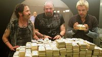
El tono de ‘Atraco por duplicado’ o ‘Flypaper’ –cuya traducción directa es “papel atrapamoscas“– es eminentemente cómico. No lo calificaría, eso sí, de parodia, aunque haga muchos guiños a películas y novelas anteriores, ya que la historia funciona por sí misma y se ve con independencia. Dejando a un lado la frase extraída de la novela de Christie, existen numerosas otras referencias, como por ejemplo, el acento del “cerebro” de la banda tecnificada, que uno de sus compañeros califica de ridículo, y que podría estar imitando el de Clive Owen ‘Plan oculto’, aunque por el físico y el tinte amarillo de Matt Ryan, el remedo se acercaría más a Colin Farrell.
El tipo de humor elegido para el film, demasiado bufo o infantil, sobre todo en lo que se refiere a los dos atracadores chapuceros, encarnados por Tim Blake Nelson y Pruitt Taylor Vince, otorga a ‘Atraco por duplicado’ un aspecto de calidad muy inferior a la que presenta en realidad. Los giros y sorpresas que nos regala el guion de Jon Lucas y Scott Moore (‘Resacón en Las Vegas’) habrían resultado satisfactorios en una película que se tomase en serio a sí misma o que, al menos, optase por un tono de humor más elevado. Lo que le falta al film no es realismo, ya que se me antoja más creíble la torpeza de estos robos que la habilidad de los atracadores de otras cintas.
Minkoff, director de irregular trayectoria –‘El rey león’ (‘The Lion King’, 1994), ‘Stuart Little’ 1 y 2 (1999 y 2000), ‘El reino prohibido’ (‘The Forbidden Kingdom’, 2008) y algunas producciones televisivas– no malogra los golpes humorísticos con su realización, se sube al ritmo que requieren las constantes novedades que ofrece el argumento y saca de los actores el máximo. Pero queda lejos de aportar una visión personal a una historia que se desperdicia en manos de un artesano.
Patrick Dempsey, que también ejerce de productor de la película, realiza un denodado esfuerzo por encajar en la psique del obsesivo compulsivo, a pesar de que su estampa va muy en contra de este tipo. Su interpretación resulta creíble y esta característica introduce cierta originalidad en el protagonista de la comedia romántica, que hasta ahora siempre se mostró asquerosamente perfecto. Ashley Judd tiene personalidad y no pierde entereza mientras permanece sabiamente en la sombra. Su papel, no obstante, lo podría haber rellenado alguna actriz más joven o con mayor poder de convocatoria en taquilla. No faltan los nombres importantes, además de los ya mencionados, entre los secundarios: Jeffrey Tambor, Mekhi Phifer y John Ventimiglia cuentan con breves papeles para los que no están desaprovechados.
Como conclusión, me quedo con indicar que, si bien no es mucho mejor de lo que podría aparentar o de lo que la mayoría nos habríamos imaginado, ‘Atraco por duplicado’ sí es más de lo que nos esperaríamos: además del componente de comedia romántica, supone un cruce entre dos interesantes subgéneros del thriller, como son el de atracos y el de asesinatos. Alguna vez se ha dicho eso de que “la comedia es una cosa muy seria” y puede que sea cierto en el sentido de que incluso el humor hay que tomárselo en serio, pues este film, debido a que se toma demasiado a broma a sí mismo echa por tierra el disfrute de algunos notables hallazgos de guion. Otros protagonistas mejor considerados habrían, asimismo, dotado a esta propuesta de una categoría mayor.
'Transformers 4' llegará en 2014
Tue, 14 Feb 2012 14:08:55 GMT
Era inevitable que la saga ‘Transformers’ continuase, básicamente porque la primera entrega recaudó 709 millones dólares a lo largo del mundo, mientras que la segunda se fue hasta los 836 millones y ‘Transformers: El lado oscuro de la luna’ se convirtió no sólo en la más taquillera de la saga con los 1.123 millones recaudados, sino que ha logrado alcanzar el puesto número cuatro entre las cintas más taquilleras de la historia al arrebatárselo por cuatro escasos millones a ‘El retorno del rey’. Este logro habría que relativizarlo dado que el precio de las entradas de cine está en constante ascenso, pero es mucho más que suficiente para que Paramount estuviera dispuesta a prácticamente cualquier cosa para que se hiciera ‘Transformers 4’. El problema es que hasta ahora los problemas iban sucediéndose, ya que Shia LaBeouf anunció que no quería seguir a bordo (habrá que ver dentro de unos años si sigue con la misma idea si su carrera alejada de los robots gigantes no está a la altura de lo esperado. ¿Alguien dijo Vin Diesel y ‘A todo gas’?) y a Michael Bay no terminaba de gustarle la idea de que su carrera se estuviese limitando en los últimos años a robots enormes dándose de leches.
Sin embargo, todas las pegas han sido insuficientes y ‘Transformers 4’ ya es una realidad: Paramount ha usado la treta para convencer a Bay de aceptar un contrato por dos películas, en la que primero rodará ‘Pain and Gain’, de la cual ya os habló mi compañero Juan Luis, para luego volver a los combates de robots marcianos con vistas a su estreno el 29 de junio de 2014 (esta vez sí les da tiempo de tomarse la molestia de tener un guión). Lo cierto es que me parecía mejor el alocado rumor que decía que Steven Spielberg iba a encargarse de dirigirla, pero bueno, es lógico que hayan querido mantener a Bay al frente de la franquicia. Lo que aún se desconoce es la identidad del protagonista, ya que se llegó a especular con la posibilidad de que Jason Statham sustituyese a LaBeouf, pero nada más se supo. Eso sí, lo que parece claro es que, de una forma u otra, ‘Transformers 4’ tendrá que ser un reboot, ya que la ausencia de Megan Fox aún se podía justificar, pero la cosa está mucho más complicada con la no presencia del protagonista de la secuela de ‘Wall street’. Personalmente, la tercera entrega me pareció una de las peores películas del año pasado, así que me alegro de que al menos tengan que optar por un reinicio, porque seguir por el camino que llevaban me daría unas ganas tremendas de no ver jamás esta cuarta entrega, ¿y vosotros qué opináis?
PD: Os dejo un vídeo en el que Michael Bay explica sus expectativas de que todo sea impresionante. Y os recomiendo echar también un vistazo a este otro vídeo que nos muestra cómo sería la Superbowl si él la dirigiera.
Vía | The Playlist
'Tengo ganas de ti', teaser tráiler de la secuela de '3 metros sobre el cielo'
Tue, 14 Feb 2012 09:11:42 GMT
La gran sorpresa del cine español de 2010 fue ‘3 metros sobre el cielo’, segunda adaptación de la novela de Fernando Moccia (ya se había hecho otra en Italia en 2004) que dirigió Fernando González Molina con Mario Casas y María Valverde como protagonistas. Con 8,5 millones de euros recaudados se convirtió en la película española más taquillera del año (llegando a superar los 10 millones en su carrera comercial en cines), y además contó con varias ediciones especiales en dvd con diversos regalitos para satisfacer las ansias de más de las fans de la película. Era obvio que nuestro cine no iba a desaprovechar la oportunidad de adaptar ‘Tengo ganas de ti’, la secuela de la historia que contaba ‘3 metros sobre el cielo’, ¿y qué mejor día para lanzar el primer teaser tráiler de la película que en San Valentín?
‘Tengo ganas de ti’ nos cuenta el regreso de Hache (Casas) tras dos años en Londres, el cual inicia una relación sentimental con Gin (Clara Lago), pero obviamente aún no ha logrado olvidar sus sentimientos hacia Babi (Valverde), con lo cual tendrá que lidiar con ambos frentes, siendo éste el eje de la función. Además, ha de encontrar trabajo y su propio sitio en la sociedad, pero no sólo ese triángulo amoroso le dificultará las cosas, sino también la tragedia que sucedió al final de ’3 metros sobre el cielo’. Además de Mario Casas y María Valverde, también repiten aparición Luis Fernández y Marina Salas, siendo Antonio Velázquez (el nuevo villano de la función) y Clara Lago (más abajo podéis ver un vídeo en el que habla sobre su personaje) las principales incorporaciones. Fernando González Molina repite en las tareas de dirección y Ramón Salazar en el guión de lo que se espera que sea uno de los principales éxitos del cine español de este 2012, aunque habrá que esperar hasta el 22 de junio para poder verla.
PD: ¿Entra en vuestros planes verla o ya ni siquiera la primera entrega os interesó lo suficiente como para dedicarle dos horas de vuestro tiempo? Yo soy de los segundos, y es que había algo que me hacía pensar (sin mucho fundamento, lo reconozco) en ‘Crepúsculo’ (y también, en el ámbito español, a la espantosa ‘El juego del ahorcado’), habiéndose reforzado esa sensación en el caso de ‘Tengo ganas de ti’. Ya sé, veo Crepúsculos por todas partes, pero, si es el caso, mejor sacadme de mi error los que visteis ’3 metros sobre el cielo’.
Vía | Antena 3
Berlinale 2012: Billy Bob Thorton y Zhang Yimou decepcionaron con sus nuevos trabajos
Tue, 14 Feb 2012 01:29:51 GMT
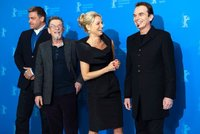
Me estaba quejando mucho de las películas actuales de Estados Unidos, la mayoría de las que se financian tratan sobre modelos con uniformes de gladiadores o comedias absurdas sobre chicos que son pillados con ovejas en hoteles, cosas así. Así que en lugar de quejarme, decidí escribir una y dirigirla. (Billy Bob Thornton)
Continuamos con el repaso a lo más destacado de la 62ª edición del festival de cine de Berlín. Hoy ha tenido lugar la quinta jornada en la que se ha podido ver el nuevo largometraje de ficción del director de Billy Bob Thornton, once años después de ‘Daddy and Them’. Compite por el Oso de Oro su ‘Jane Mansfield´s Car’, en cuyo reparto encontramos a John Hurt, Robert Duvall, Kevin Bacon, Robert Patrick, Frances O´Connor, Katherine La Nasa, Ray Stevenson y el propio Thornton; basada parcialmente en los recuerdos de su infancia, la película traslada al espectador a Alabama en 1969 y se centra en el enfrentamiento entre dos familias, una norteamericana y otra inglesa, vinculadas por una mujer recientemente fallecida que pidió ser enterrada en su tierra natal. El crítico de HollywoodReporter la considera totalmente fallida, sin emoción y con diálogos inverosímiles. En Cine-Vue la califican de desastre, por mezclar de manera desafortunada comedia y drama, y la crítica de Variety elogia a los actores pero tampoco defiende la película (que recuerda a algo que escribiría Tennessee Williams), apuntando que podría ser mejor recortando metraje. Quedamos avisados.
Nos quedaba pendiente echar un vistazo a lo que se ha dicho sobre cuatro títulos de la sección de competición. Empezamos por ‘Aujourd’hui’ (o ‘Today’) de Alain Gomis, que se centra en las últimas horas de vida de un senegalés (interpretado por el músico Saul Williams) que vuelve a su país para despedirse de varias personas de su pasado. El crítico de Screen Daily aplaude la película, destacando el cuidado apartado visual, la elegancia narrativa y la interpretación del protagonista; al enviado de Indiewire también le gustó, especialmente la primera mitad, y la califica de poética, pero apunta que el realizador se va quedando sin ideas en la segunda mitad. Ambos subrayan que apenas hay diálogos y explicaciones, que hay que ver y sentir la experiencia del personaje principal.
‘A Moi Seule’ (‘Coming Home’) de Fréderic Videau gira en torno a una joven (encarnada por Agathe Bonitzer) que fue raptada siendo niña, y tras vivir encerrada en un sótano durante ocho años, recupera la libertad y debe adaptarse a una nueva vida. Aunque se aclara que la historia no está basada en hechos reales, es inevitable recordar el caso de Natascha Kampusch. El acreditado de HollywoodReporter habla muy bien del reparto (destaca a Noemie Lvovsky, la madre de la protagonista) y subraya el inesperado retrato que hace el director de la relación entre el secuestrador y la víctima, a veces cariñosa y divertida; al cronista de ScreenDaily no le convenció, elogia a la chica protagonista pero considera desafortunadas la estructura de la historia, el retrato del criminal y la música.
‘Barbara’ de Christian Petzold, está ambientada en Alemania, en el verano de 1980, y se centra en una médica (a la que da vida Nina Hoss) que como castigo es transferida desde Berlín al pequeño hospital de un pueblo de provincias, donde atraviesa una crisis y un importante conflicto emocional. Sergi Sánchez escribe en LaRazón que la película es demasiado fría y no llega a funcionar; Carlos Boyero sin embargo elogia el trabajo de Petzold en su artículo para ElPaís, destacando la atmósfera y la complejidad del relato.
‘Cesare Deve Morire’ (‘Caesar Must Die’) de los hermanos Paolo y Vittorio Taviani, es la historia de un grupo de presos (auténticos) que representan una obra teatral, ‘Julio César’ de William Shakespeare. Al crítico de Indiewire le encantó la propuesta, destacando el juego que se establece entre la obra, la realidad de los presos y la situación actual del país; la crítica de HollywoodReporter también aplaude este docudrama y destaca la secuencia en la que se realiza el casting para la representación, pero comenta que se hace pesada a pesar de no llegar a los 80 minutos de duración y que los realizadores se equivocan incluyendo más explicación de la cuenta. He leído en varios medios que en general gustó mucho y que ya es una de las favoritas para entrar en el palmarés.
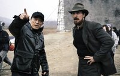
Vamos ya con otros dos de los títulos más esperados de la Berlinale 2012, pero que no compiten por el Oso de Oro. Empiezo con la superproducción china ‘The Flowers of War’, lo último de Zhang Yimou, que acudió al festival acompañado de dos de los protagonistas de la película, Christian Bale y Ni Ni.
Como recordaréis cuando hablamos del tráiler, la película es un nuevo acercamiento a la brutal masacre de Nanking, cometida durante la invasión del ejército japonés en 1937; fue nominada al Globo de Oro y no logró entrar en las nominaciones al Oscar. En la reseña de Filmin se destaca la impecable factura visual pero se ataca la historia, que se tacha de previsible y olvidable; la crítica de Cine-Vue no la pone mucho mejor, aplaude a las actrices chinas y vuelve a destacar el espectáculo visual logrado por Yimou, pero dice que falla en los momentos dramáticos y que se fuerza el camino a la redención del personaje de Bale. Y ojo porque en Metacritic tiene una valoración de 4,6 sobre 10. Pero habrá que verla, ¿no?, yo al menos no me pienso perder una película de Yimou, sobre todo cuando se ha subrayado que es una gozada visual. Por desgracia todavía no hay fecha de estreno para España.
Una película que se me escapó en el artículo de ayer y que pinta muy bien es ‘Shadow Dancer’, el debut en la ficción de James Marsh, el director de ‘Man on Wire’. Está protagonizada por Clive Owen y Andrea Riseborough; se centra en una madre soltera que tras ser arrestada en Londres por intentar colocar una bomba por orden del IRA, se convierte en una espía para el servicio de inteligencia británico. Boyero dice en ElPaís que el trabajo de Marsh es fascinante y complejo, una dura historia que deja tocado tras su visionado; en su reseña para ElMundo, Luis Martínez se muestra igual de entusiasmado, destaca el realismo de una película turbia y triste en la que no hay buenos o malos, solo violencia absurda. De momento tampoco hay fecha para el estreno en nuestro país, la apuntamos.
PD: Me ha faltado repasar lo que se ha dicho sobre ‘L´Enfant d´en Haut’ de Ursula Meier, programada en la sección competitiva. Beatriz se ocupará del siguiente artículo, le comentaré que la incluya.
Al Pacino sustituye a Javier Bardem en 'Gru: Mi villano favorito 2'
Mon, 13 Feb 2012 18:23:39 GMT
No habíamos anunciado hasta ahora en Blogdecine que se preparaba una segunda parte de ‘Gru, mi villano favorito’ (‘Despicable Me’, 2010), de Chris Meledandri. Y, sin embargo, las noticias al respecto incluían al español más internacional, Javier Bardem, que en un principio contaba con el papel del malo, un amenazante personaje que respondería al apodo de “El Macho” y que se enfrentaría al Gru al que presta la voz Steve Carell, junto con su hijo, “Machito”. Ahora, Bardem se ha desvinculado del proyecto de secuela, que lleva por título ‘Despicable Me 2’.
Al Pacino, en su primer papel en animación, ocupará el hueco dejado por Bardem, probablemente con otro personaje y otro apodo, pero igualmente como némesis de Gru, quien, a su vez, empezó como villano en la cinta original. Russell Brand y Julie Andrews podrían repetir en sus papeles correspondientes.
Ni que decir tiene que Pacino es un intérprete de mayor categoría que Bardem y con una trayectoria de films prestigiosos mucho más extensa. Aún así, me había gustado ver a un personaje diseñado para ser encarnado por un español, ya que los chistes con el idioma y con los tópicos regionales siempre me hacen gracia y, dado el nombre que le habían buscado, no me cabe duda de que iría por ahí. Puede ser precisamente ese el motivo que haya impulsado a Bardem a abandonar el proyecto.
‘Despicable Me 2’ tiene previsto su estreno el 28 de junio de 2013.
Vía | Deadline.
'A Better Life', inmenso Demian Bichir
Mon, 13 Feb 2012 09:27:14 GMT
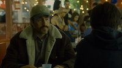
A falta de dos semanas para la entrega de los Oscars, las apuestas en la categoría de mejor actor principal se dividen entre un magnífico George Clooney —dicen que el favorito para hacerse con una segunda estatuilla— y Jean Dujardin —quien creo que finalmente lo conseguirá, por su excelente composición, y una campaña de promoción que quita el hipo—. En un segundo plano quedarían Brad Pitt —lo acabará consiguiendo algún día, sin duda— y Gary Oldman —su primera nominación se ha hecho esperar más de lo normal—; y en un tercero Demian Bichir, un privilegiado por estar al lado de los citados. Y para un servidor, el claro merecedor del premio, por encima de todos, pues el actor es el principal soporte de una película como ‘A Better Life’ (Chris Weitz, 2011). Un film totalmente alejado en temática y forma de los anteriores trabajos de su director.
Chris Weitz obtuvo un enorme éxito al dirigir con su hermano Paul ‘American Pie’, para luego saborear las mieles del fracaso con ‘Down to Earth’ (id, 2001), bochornoso remake de ‘El cielo puede esperar’ (‘Heaven Can Wait’, Warren Beatty & Buck Henry, 1978), que ya era un remake de ‘El difunto protesta’ (‘Here Comes Mr. Jordan’, Alexandre Hall, 1941) —evidentemente la mejor versión de todas—. Luego sorprendieron a propios y extraños con ‘Un niño grande’ (‘About a Boy’, 2002), deliciosa comedia que diez años después sigue sin perder un ápice. La alegría duraría unos cinco años, al cabo de los cuales Weitz regresó en solitario con dos bodrios de proporciones cósmicas; por un lado ‘La brújula dorada’ (‘The Golden Compass’, 2007), que aún no entiendo cómo ganó el Oscar a los efectos visuales, y al par de años con ‘La saga Crepúsculo: Luna nueva’ (‘The Twilight Saga: New Moon’, 2009). ‘A Better Life’ es toda una sorpresa, como lo fue el film con Hugh Grant, en su filmografía.
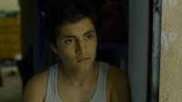
La historia de la película es la historia de Carlos Galindo, un inmigrante ilegal, mexicano, que trabaja en Los Ángeles ocupándose de la jardinería en las amplias mansiones de algunos de los ricos del lugar. Vive con su hijo Luis, quien pasa el tiempo metiéndose en algún que otro problema escolar mientras está a punto de entrar en una banda. Carlos sólo quiere lo mejor para su hijo y su futuro tal vez se encuentre en comprarle la furgoneta de trabajo a su patrón para sí tener un negocio propio. Estados Unidos es la tierra de las oportunidades, pero a veces, muchas, esas oportunidades son tan efímeras como la vida misma. ‘A Better Life’ toca muchos temas, pero donde se centra realmente es en la relación de un padre con su hijo. Por momentos demasiado bienintencionada, y en otros profundamente dolorosa.
Weitz demuestra la buena mano que tuvo con ‘Un niño grande’, controlando aquí un cierto ritmo pausado, aunque en la película no dejan de pasar cosas, y siempre con la mirada puesta en su actor principal, Demian Bichir, un diamante en bruto cuya interpretación deja sin aliento, remueve las entrañas y conmueve hasta lo más hondo. Tal vez a Weitz le falte algo para tener un estilo propio —su más que irregular filmografía demuestra poca claridad de ideas—, algo de más de fuerza narrativa o empaque, pero al menos demuestra inteligencia sabiendo que tiene entre manos a un actor que lo da absolutamente todo. La estrella absoluta es Bichir, y Weitz lo mima con su cámara, no le deja ni un respiro, sabiendo que de un momento a otro el actor robará literalmente el corazón del espectador, cosa que por cierto sucede a los pocos minutos del inicio.
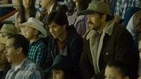
Bastan unos momentos para ver en el rostro del actor, no a un actor sino a un hombre dolorido por el paso del tiempo, por la falta de oportunidades que nunca terminan de llegar. Un rostro cansado, y al mismo tiempo con un vestigio de esperanza, con la única ilusión de dar a su hijo lo que él nunca tuvo, una educación en un buen colegio, una buena vida, una mejor que la que conocen, una existencia en todo caso digna, sin tener que mirar hacia otro lado cuando aparece la policía, o sin tener que agacharse ante una injusticia. Podemos ver en su cara, el dolor del abandono y la enorme desilusión que produce el ser un fracasado a los 40 años en un país que no es el suyo, pero luchando incansablemente por encontrar un lugar en el mundo, siendo uno de esos hombres que Bertolt Bretch llamaría imprescindibles.
A su lado José Julián, en el papel del hijo adolescente, demuestra una más que perfecta compenetración con Bichir, logrando el milagro. Puede que ‘A Better Life’ pase muy por encima de temas que pone sobre la mesa —la mala educación, las malas compañías, el sistema judicial, etc— pero contiene el suficiente interés gracias a la relación paterno-filial. Aún con todo, muestra la realidad, esa que nos negamos a ver, sin maniqueísmos ni florituras de ningún tipo —el gran logro de Weitz—, y nos agita por dentro al comprobar como los buenos hombres son tratados injustamente, simple y llanamente por tener buen corazón —atención a cómo el hijo le recrimina ser una buena persona en un mundo tan vil—, y cómo nos deberíamos asquear al comprobar que para sobrevivir a veces hay que violar la ley, esa que nada tiene que ver con la justicia.
BAFTA 2012 | Ganadores | Almodóvar se cuela entre el artista y el topo
Sun, 12 Feb 2012 21:35:41 GMT
Es la noticia del momento en España. Esta noche se ha celebrado la gala de los premios BAFTA 2012, que entrega la academia británica de cine y televisión, y ‘La piel que habito’ ha sido elegida la mejor película de habla no inglesa. Es el quinto BAFTA que recibe Pedro Almodóvar, y una gran sorpresa porque todo apuntaba que la ganadora sería ‘Nader y Simin, una separación’, del iraní Asghar Farhadi (premiada en Berlín y en los Globos de Oro); quizá por eso el director manchego no acudió a la ceremonia, celebrada en el Royal Opera House de Londres, teniendo que ser el actor indio Anil Kapoor quien agradeciera el galardón en su lugar. El otro español nominado, Alberto Iglesias, no ha tenido tanta suerte y su música para ‘El topo’ (‘Tinker, Tailor, Soldier, Spy’) ha sido derrotada por la de ‘The Artist’, compuesta por Ludovic Bource, el gran favorito para lograr el Oscar.
Y es que tras la entrega de los BAFTA, ‘The Artist’ se consolida como la gran favorita para triunfar en la noche de los Oscar, el próximo 26 de febrero (no olvidéis que la comentaremos en directo en Blogdecine). El hermoso homenaje al séptimo arte de Michel Hazanavicius aspiraba a doce premios y al final se ha llevado siete, incluyendo mejor película y dirección. Con once nominaciones partía ‘El topo’, la adaptación de John le Carré dirigida por Tomas Alfredson, que ha sido elegida la mejor película británica del año pasado, algo que no tiene mucha discusión. A continuación os dejo la lista completa de los ganadores de los premios BAFTA 2012:
Mejor película:
‘The Artist’
‘Los descendientes’ (‘The Descendants’)
‘Drive’
‘Criadas y señoras’ (‘The Help’)
‘El topo’
Mejor película inglesa:
‘El topo’
‘Mi semana con Marilyn’ (‘My Week with Marilyn’)
‘Senna’
‘Shame’
‘Tenemos que hablar de Kevin’ (‘We Need to Talk About Kevin’)
Mejor película de animación:
‘Rango’
‘Las aventuras de Tintín: El secreto del Unicornio’ (‘The Adventures of Tintin’)
‘Arthur Christmas: Operación regalo’ (‘Arthur Christmas’)
Mejor película en lengua no inglesa:
‘La piel que habito’
‘Incendies’
‘Pina’
‘Potiche’
‘Nader y Simin, una separación’
Premio a la mejor ópera prima británica:
Paddy Considine y Diarmid Scrimshaw por ‘Redención’ (‘Tyrannosaur’)
Joe Cornish por ‘Attack the Block’
Will Sharpe, Tom Kingsley y Sarah Brocklehurst por ‘Black Pond’
Ralph Fiennes por ‘Coriolanus’
Richard Ayoade por ‘Submarine’
Mejor documental:
‘Senna’
‘George Harrison: Living in the Material World’
‘Project Jim’
Mejor director:
Michel Hazanavicius por ‘The Artist’
Nicolas Winding Refn por ‘Drive’
Martin Scorsese por ‘La invención de Hugo’ (‘Hugo’)
Tomas Alfredson por ‘El topo’
Lynne Ramsay por ‘Tenemos que hablar de Kevin’
Mejor guión original:
Michel Hazanavicius por ‘The Artist’
Kristin Wiig y Melissa McCarthy por ‘La boda de mi mejor amiga’ (‘Bridesmaids’)
John Michael McDonagh por ‘El irlandés’ (‘The Guard’)
Abi Morgan por ‘La dama de hierro’ (‘The Iron Lady’)
Woody Allen por (‘Midnight in Paris’)
Mejor guión adaptado:
Bridget O´Connor y Peter Straughan por ‘El topo’
Jim Rash, Nat Faxon y Alexander Payne por ‘Los descendientes’
Tate Taylor por ‘Criadas y señoras’
George Clooney, Grant Heslov y Beau Willimon por ‘Juego de traición’ (‘The Ides of March’)
Steve Zaillian y Aaron Sorkin por ‘Moneyball: Rompiendo las reglas’ (‘Moneyball’)
Mejor actor:
Jean Dujardin por ‘The Artist’
George Clooney por ‘Los descendientes’
Michael Fassbender por ‘Shame’
Brad Pitt por ‘Moneyball’
Gary Oldman por ‘El topo’
Mejor actriz:
Meryl Streep por ‘La dama de hierro’
Bérénice Bejo por ‘The Artist’
Viola Davis por ‘Criadas y señoras’
Tilda Swinton por ‘Tenemos que hablar de Kevin’
Michelle Williams por ‘Mi semana con Marilyn’
Mejor actriz de reparto:
Octavia Spencer por ‘Criadas y señoras’
Carey Mulligan por ‘Drive’
Jessica Chastain por ‘Criadas y señoras’
Judi Dench por ‘Mi semana con Marilyn’
Melissa McCarthy por ‘La boda de mi mejor amiga’
Mejor actor de reparto:
Christopher Plummer por ‘Beginners (Principiantes)’
Kenneth Branagh por ‘Mi semana con Marilyn’
Jim Broadbent por ‘La dama de hierro’
Jonah Hill por ‘Moneyball’
Philip Seymour Hoffman por ‘Juego de traición’
Mejor dirección artística:
Dante Ferretti y Francesca Lo Schiavo por ‘La invención de Hugo’
Laurence Bennett y Robert Gould por ‘The Artist’
Rick Carter y Lee Sandales por ‘War Horse (Caballo de batalla)’
Stuart Craig y Stephenie McMilan por ‘Harry Potter y las Reliquias de la Muerte. Parte 2’ (‘Harry Potter & The Deathly Hallows. Part 2’)
Maria Djurkovic y Tatiana MacDonald por ‘El topo’
Mejor sonido:
‘La invención de Hugo’
‘The Artist’
‘Harry Potter y las Reliquias de la Muerte. Parte 2’
‘El topo’
‘War Horse’
Mejor fotografía:
Guillaume Schiffman por ‘The Artist’
Jeff Cronenweth por ‘Millennium: Los hombres que no amaban a las mujeres’ (‘The Girl With The Dragon Tattoo’)
Robert Richardson por ‘La invención de Hugo’
Hoyte van Hoytema por ‘El topo’
Janusz Kaminski por ‘War Horse’
Mejor música:
Ludovic Bource por ‘The Artist’
Trent Reznor y Atticus Ross por ‘Millennium: Los hombres que no amaban a las mujeres’
Howard Shore por ‘La invención de Hugo’
Alberto Iglesias por ‘El topo’
John Williams por ‘War Horse’
Mejor vestuario:
Mark Bridges por ‘The Artist’
Sandy Powell por ‘La invención de Hugo’
Michael O´Connor por ‘Jane Eyre’
Jill Taylor por ‘Mi semana con Marilyn’
Jacqueline Durran por ‘El topo’
Mejor montaje:
Gregers Sall y Chris King por ‘Senna’
Anne-Sophie Bion y Michel Hazanavicius por ‘The Artist’
Matthew Newman por ‘Drive’
Thelma Schoonmaker por ‘La invención de Hugo’
Dino Jonsäter por ‘El topo’
Mejor maquillaje:
‘La dama de hierro’
‘The Artist’
‘La invención de Hugo’
‘Harry Potter y las Reliquias de la Muerte. Parte 2’
‘Mi semana con Marilyn’
Mejores efectos visuales:
‘Harry Potter y las Reliquias de la Muerte. Parte 2’
‘Las aventuras de Tintín’
‘La invención de Hugo’
‘El origen del planeta de los simios’ (‘The Rise of the Planet of the Apes’)
‘War Horse’
BAFTA honoríficos:
Martin Scorsese y John Hurt.
Premio del público a la estrella emergente:
Adam Deacon
Eddie Redmayne
Chris Hemsworth
Tom Hiddleston
Chris O´Dowd
El amor en 32 películas (I): 'El séptimo cielo' de Frank Borzage
Sun, 12 Feb 2012 13:58:43 GMT
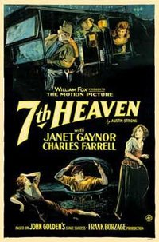
Empezamos este especial con la película que consiguió más nominaciones en la primera entrega de los Oscars que se realizó, concretamente en 1929. Nada menos que cinco nominaciones consiguió ‘El séptimo cielo’ (‘7th Heaven’, Frank Borzage, 1927), todo un logro si consideramos que las categorías aquellos años eran muchas menos que en la actualidad, y que los galardones tanto de película como de director se dividían en dos grupos. Janet Gaynor, su protagonista, fue la primera actriz en ganar un Oscar, y lo hizo por su labor en tres películas, la que nos ocupa, la imprescindible ‘Amanecer’ (‘Sunrise’, F.W. Murnau, 1927), y ‘El ángel de la calle’ (‘Street Angel’, Frank Borzage, 1928), film que volvió a reunirle con Charles Farell, con el que repetiría en un buen número de films debido al éxito obtenido con ‘El séptimo cielo’.
Lo cierto es que la Gaynor era la intérprete ideal para el tipo de historia que narra el que fue el mayor éxito de Borzage, uno de los realizadores más eminentemente románticos de toda la historia del cine. La actriz poseía la justa mezcla de fragilidad y serenidad, para hacerse cargo de un personaje como el que aquí interpreta, una pobre mujer enamorada que encontrará la paz en un pocero metido a barrendero. Hay que subrayar el hecho de que estamos ante una de esas historias de amor inmortal, con un punto bastante inocente, pero que gracias a la labor de Borzage, se erige como una de las obras maestras del cine. Es realmente difícil imaginar a otro director detrás de esta historia, aunque diez años después Henry King realizó un remake con James Stewart que aunque estimable, no soporta la comparación. En la sensible mano de Borzage está la diferencia.
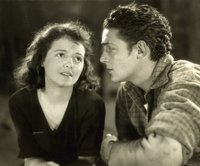
‘El séptimo cielo’ narra la historia de Diane, una pobre muchacha en los bajos fondos de París, a las puertas de la I Guerra Mundial, y que vive con su tiránica hermana. Por otro lado, conoceremos también a Chico, un pocero que sueña con ser barrendero para estar entre la gente trabajando, y no sumido en las alcantarillas. Muy pronto los destinos de estos dos desgraciados, en el buen sentido del término, se cruzarán. Todo ello porque Diane recibe una brutal paliza por parte de su hermana por culpa de la honradez de esta. Chico saldrá en su defensa en plena calle, y se apiadará de la muchacha en el instante en el que la policía quiera detenerla por dedicarse a la mala vida, valga el eufemismo. Para ello no se le ocurrirá otra cosa que decir que es su esposa, algo que será comprobado por los agentes a su debido tiempo. En poco tiempo, ‘El séptimo cielo’ pone sobre la mesa cuestiones vitales con las que enseguida conectamos.
Resulta curioso como la frase con la que se define a sí mismo Chico —“hay que mirar hacia arriba… soy un chico muy peculiar…“—, marca continuamente el desarrollo de la película. Sus personajes ascienden emocionalmente siguiendo esa declaración de intenciones. Chico pasa del mundo de la alcantarilla al de la gente normal, como él los llama, la calle, donde conoce a Diane. Y vive en un ático, el séptimo cielo del título, del que Borzage filma no pocas veces cómo los protagonistas suben a través de todo un universo de personajes, habitantes de cada piso. Lo mismo sucede en su milagroso final en el que Chico, volviendo ciego de la guerra asciende por la escalera de caracol, enfocada desde arriba y dando la sensación de que es algo peligroso, para encontrarse con su amor verdadero, simbolizando un ascenso a los cielos. Pocas veces la carga religiosa en un film ha sido tan efectiva, elemento por cierto que se repetiría alguna que otra vez en la filmografía de Borzage, con la extraña cualidad de no chirriar.
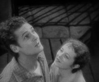
La historia de amor retratada en ‘El séptimo cielo’ es una de esas historias cargadas de inocencia sobre el amor puro y verdadero, ése que nos creemos que existe y luego hacemos el gilipollas en la vida real. Sin embargo, la fuerza dramática de Borzage, llena de un lirismo arrebatador, y la convicción con la que está narrada, hacen que la historia sea totalmente creíble. El universo creado por el director es de una coherencia estremecedora, por cuanto Borzage mezcla con inusitada pericia, esa que pocas veces se ha vuelto a repetir en un realizador, realismo, lirismo y unas gotas de épica, dando como resultado lo que podemos llamar el estilo Borzage. Un director que de puesta en escena sabía un rato largo, y aunque las malas lenguas lo comparaban de forma peyorativa con Murnau, probablemente por coincidencias temáticas, lo cierto es que dicha comparación está cogida por los pelos. Coetáneos sí, cierto gusto por la abstracción, también, sobre todo en Murnau, pero Borzage era mucho más poético en sus historias de amor, todas ellas bigger than life.
El amor de Diane hacia Chico nace de la compasión de este hacia ella, que sin conocerla hace lo que nadie ha hecho por ella por protegerla. El amor de Chico hacia Diane nace del día a día. De esta forma Borzage fusiona dos elementos básicos en el amor y lo eleva al máximo, convirtiendo el sentimiento amoroso en algo más fuerte que la propia vida, incluso que la propia muerte, capaz de atravesar cualquier adversidad, dotándolo de un carácter místico, casi milagroso —los amantes se reunirán mentalmente todos los días a las 11 de la mañana, cuando Chico esté en combate—, que hará superar algo tan terrible como una guerra. Resulta curioso cómo Chico le dice una y otra vez a Diane que él no tiene miedo de nada, y cuando él le declara su amor en el momento menos esperado, es Diane quien pasa a no tener miedo absolutamente de nada, apoyada en la certeza del amor correspondido. Para completarlo, Borzage subraya el carácter ilógico del amor, en un final que escapa a todo raciocinio devolviendo a Chico ciego, pero viendo más que nunca, al lado de su amada. La puesta en escena en ese instante es soberbia, realzando cada encuadre para magnificar, y sin estridencias, el reencuentro. El haz luz que baña a la pareja tiene connotaciones religiosas nada disimuladas, pero muy coherentes —Chico era un creyente decepcionado, pero el amor le ha devuelto la fe—. Nadie se atreve a interrumpir, y ‘El séptimo cielo’ sigue impresionando 85 años después de su realización.
La piratería no va a matar al cine
Sun, 12 Feb 2012 10:14:53 GMT
Hace unas semanas se anunció a bombo y platillo que el embargo judicial de megaupload poco menos que iba a salvar el cine. Para ello, los medios optaron por informar de una forma completamente sesgada aprovechando el éxito sorpresa de ‘Los descendientes’ en España para decir que los resultados de taquilla habían mejorado de forma sustancial y que a partir de ahora todo iba a ser un camino de rosas. De hecho, hasta recuerdo comentarios sobre lo bien que les había ido a los videoclubs, dando una imagen tan de cuento de hadas que ahora parecía que era la oportunidad de nuestra vida para abrir uno y forrarnos. Soy consciente de que era necesario edulcorar al máximo la realidad para justificar el discutible cierre de megaupload, donde se ha aprovechado hasta límites obscenos la personalidad de su creador para demonizar aún más las descargas ilegales.
La cuestión es que la realidad nos ha ido mostrando que ese presunto fin de semana milagroso fue un mero espejismo, y es que tomar las cifras de recaudación de una semana como elemento de referencia. Por ejemplo, si aceptamos el juego propuesto, las recaudaciones de la semana pasada en España fueron casi un 30% menores que las de la misma semana de 2011, y las estimaciones para ésta aventuran unos ingresos entre un 10 y un 25% menores a los del año pasado. En su momento, mi compañero Juan Luis os preguntó si creíais que el cierre de megaupload era una buena noticia para el mundo del cine, a lo que habría que unir el hecho de que varios servicios de descarga directa han seguido de forma voluntaria los pasos de megaupload para evitar problema con la justicia americana. Ahora la cuestión es ¿se puede intentar ser más inteligente que Internet para imponer tu criterio de lo que es bueno o malo?
Una de las cosas que más repiten los medios es que España es uno de los países que más piratea del mundo, importando poco que esa sea una verdad relativa. Sin embargo, algo tangible que escuchamos muy a menudo son cifras millonarias que se estiman como las pérdidas que la mal llamada piratería (sigue sin ser ilegal compartir por mucho que le pese a algunos acomodados del sector cultural) provoca. Aquí encontramos uno de los principales errores entre los argumentos que se esgrimen, y es que ¿realmente alguien se cree que aquellas personas que ven una película grabada en un cine con una calidad de imagen y sonido discutible van a pagar los cada vez más elevados precios de una entrada de cine? Sé que es de ingenuos pensar justo lo contrario, ya que es impensable la idea de que si se consiguiera la quimera de erradicar la compartición de archivos ni una sola de esas personas que se ha descargado alguna película fuese al cine a verla, a su videoclub más cercano (si es que aún queda alguno no muy lejos de su casa) a alquilarla o incluso, en un alarde de optimismo por mi parte, a comprársela sin tan siquiera haberla visto. Los hay que han dejado de ir al cine para luego comprarse la película directamente en blu-ray cuando salga a la venta, pero son una minoría muy, y perdón por la redundancia, muy minoritaria.
Lo que también se olvida a la hora de hablar del bajón de asistencia a los cines españoles en los últimos años es valorar el servicio que ofrecen. Y es que España es uno de los doce países de los 22 de la Unión Europea en los que cayó la asistencia a las salas de cine durante el pasado 2011, pero también hay otros diez donde aumentó. ¿A qué puede deberse en un contexto generalizado de crisis económico? Yo lo único que conozco con cierta profundidad es la realidad española, y ahí hay muchos problemas que criticar. Empecemos por el hecho de que hay películas que cuentan con una distribución tan limitada que no llegan a muchas ciudades españolas. Recuerdo intentar animar a la gente a ver la estupenda ‘Arrugas’ y que alguien me comentó que no se había estrenado donde vivía y que así le era imposible poder verla de otra forma que no fuese optando por las descargas poco lícitas.
El deterioro de las salas de cine
También leí en su momento varios comentarios sobre gente que quería ver ‘The Artist’, pero su cauteloso estreno hizo que tardase varias semanas en llegar a su lugar de origen, y eso si tan siquiera se ha podido ver allí en algún momento. Sé que existe el cada vez mayor riesgo de que los espectadores luego no respondan como uno quisiera, pero si ya empiezas forzando a no pocas personas a tener que buscar en Internet para poder ver lo que quieren, lo que vas a acabar consiguiendo es acabar creando un hábito de consumo. Hay que tener también en cuenta que no pocas películas llegan a España con meses o años de diferencia respecto a su estreno en su país de original. De hecho, las hay que ni tan siquiera llegan a tener distribución en nuestro país. ¿Cuál es la salida que les queda a unos espectadores que encima, en varios casos, ni siquiera pueden estar seguros de que vaya a llegar a estrenarse donde ellos viven? Luego vienen las quejas (o los anuncios antipiratería como los que parodia el vídeo de más arriba) sobre que eso es algo que se extiende y hay quien prefiere hacerlo en (casi) todos los casos. No creo que esa deba ser la salida, pero visto lo visto tampoco puedo pensar que sean unos criminales cuando luego personas como Francisco Camps son declaradas inocentes por la justicia de este país de risa para muchas cosas que es España.
Personalmente, y espero que nadie vengan con el calificativo de snob por lo que voy a decir, prefiero el ver una película en versión original a tener que verla doblada. Eso no me libra de tener que acabar viendo alguna película así, pero la realidad es que intento obviar de forma consistente aquellas cintas que llegan a España, pero lo hacen sin una triste copia en versión original para saciar a los espectadores que queremos verlas así. Valga por ejemplo el caso de la reciente ‘Los Muppets’, para cuyo estreno se nos ha negado esa opción. Tampoco me olvido del hecho de que hay muy pocas ciudades en España en las que se puedan ver películas en versión original de forma regularizada, y es que aún recuerdo cuando vivía en Bilbao que el hecho de que estrenasen en su día ‘Buenos noches, y buena suerte’ en versión original me pareció poco menos que un acontecimiento. No voy a entrar a valorar la cultura del doblaje en nuestro país, pero su imposición a la hora de ver una película pagando me parece otro de los lugares por los que se van perdiendo espectadores.
Sin embargo, creo que, dejando de lado la delicada situación económica de muchos, el hecho de que se esté perdiendo la idea de ir al cine como algo especial es el gran culpable de todo esto. Me niego a demonizar la proliferación de las multisalas de centro comercial, pero sí que me gusta bastante poco el hecho de que esto esté vulgarizando la experiencia de ver una película en pantalla grande. ¿Para qué voy a ir al cine si por quejarme de que otra persona esté haciendo ruidos con su móvil puedo ganarme casi una paliza cuando se vuelvan a encender las luces tras la aparición de los créditos finales? Pues bien, eso fue lo que nos pasó a mi mejor amigo y a mí cuando fuimos a ver ‘Tensión sexual no resuelta’ a unos cines de este tipo. Además, esto ha ido provocando a lo largo de los últimos años el cierre de multitud de cines de los de toda la vida, es decir, salas enormes y auténtica sensación de estar viviendo una experiencia por la que merezca la pena dejarte tus euros.
Ese es un hueco que algunos están intentando rellenar con iniciativas como la Phenomena Experience, pero recurriendo a la nostalgia de títulos míticos del pasado. ¿Se os ocurren muchas películas de los últimos años que realmente hayan alcanzado un estatus suficiente como para que sean las merecedoras de formar parte de algo así en unos 20 años? A mí me vienen a la mente muchas cintas buenísimas de los últimos años, pero muy pocas que hayan generado un culto especial en su exhibición en salas. Acudir al cine se ha mecanizado al mismo tiempo que se ha encarecido de forma exagerada. ¿Es más barato que en otros países? De nada sirve tomar el dato que interesa (precios), pero sin dar ninguna importancia a otros factores igual de importantes (salarios). Los lectores que vivan en Madrid recordarán la reciente campaña del metro de Madrid que ha buscado hacer algo así para que el precio del billete de metro parezca muy barato en comparación con otros metros europeos. Obviamente, las pintadas recordando el salario mínimo de esos otros países no tardaron en llegar.
Hay otros problemas añadidos a la proliferación de las multisalas de centro comercial, y es que no es raro tener que ver películas con una calidad de imagen mejorable porque no ajustan suficientemente bien el enfoque de la imagen, absurdeces como verlas con la luz encendida y que ésta se apague cuando aparezcan los créditos finales o auténticos timos que provocan un cabreo de impresión. En mi caso, recuerdo el caso de ‘Casino royale’, en la cual hubo un par de cortes de luz que nos dejaron durante un rato esperando. Es lógico que si hay un problema, pues se para y la película ya continuará cuando se arregle, pero no que timen al espectador y le escamoteen una parte importante del final. ¿Por qué digo esto? Pues porque el segundo corte coincidió con el tramo final, pero al volver la luz se habían zampado aproximadamente diez de los once últimos minutos. Encima, al ir a reclamar se inventaron que había habido una tormenta (mentira, el cielo estaba totalmente despejado) para lavarse las manos. Lo peor de todo es que apenas cuatro personas reclamamos por lo sucedido y, obviamente, nuestra queja no obtuvo respuesta alguna. Mientras tanto, yo tuve que esperar varios meses a que un amigo me dejase la película en dvd para rellenar esa pequeña laguna argumental.
Las opciones legales
Sé que habrá quien me salte que ahora hay varios servicios online legales que vienen a llenar ese hueco para los que no están muy por la labor de ir al cine y encontrarse con alguna situación esperpéntica, pero lo que hay no me sirve. Sé que sería muy fácil dejarlo así, pero valoremos los principales servicios que tenemos en España: Filmin, Wuaki, Youzee y Voddler. La primera, de largo la mejor, está consiguiendo ser una referencia en cuanto a catálogo de cine independiente, pero el problema es que un servicio así debería dar respuesta a las necesidades de todo tipo de espectador. Además, los tres euros que tienden a costar las películas más relevantes son un precio bastante elevado. Sí que cuentan con una tarifa plana mensual (y si optas por la suscripción anual te sale a algo menos de diez euros el mes), pero el detalle de incluir tres estrenos mensuales se queda un poco corto. Aquí podéis encontrar un análisis más pormenorizado, pero lo cierto es que la única pega grave que se le puede poner es que prescinda del cine más comercial, pero es algo preestablecido, y no una sorpresa negativa.
La cosa se degrada cuando nos ponemos con Wuaki, donde el precio de los títulos de estreno sube hasta los 4 euros, aunque a cambio sí tenemos acceso a títulos con un componente comercial más marcado. Por ejemplo, podemos encontrar la última entrega de ‘Transformers’, pero ¿por qué no está disponible en alta definición, y por qué no hay subtítulos con los que poder verla si optas por el visionado en versión original? Wuaki también da la opción de adquirir algunos títulos, pero a precios absurdamente altos: Es de agradecer que cuenten con un estreno reciente del mercado doméstico como ‘Crazy, stupid, love’, una de las mejores películas de 2011, y que puedas adquirirla directamente para poder verla cuantas veces quieras, pero los 14 euros que tienes que pagar son un completo disparate cuando por poco más puedes tener la película en formato físico. Por no hablar del hecho de que estamos en plena época de rebajas, con lo que podrías adquirirla así incluso a un precio inferior al que ofrece wuaki. Y recordad, sin alta definición, sin subtítulos y encima con audio sólo disponible en estéreo.
Sobre Youzee y Voddler lo cierto es que prácticamente sólo se me ocurren pegas. La primera, a la que aún está restringido el acceso, cuenta con un catálogo un tanto desolador, pero se le ven buenas intenciones como la cuota mensual de tarifa plana a un precio asequible (aunque también mantiene el pago individual por títulos más recientes), así que mejor esperar un poco más antes de empezar a criticarla sin rubor. Sin embargo, con Voddler parece que hayan querido hacer mal las cosas aposta: El catálogo es muy escaso y apenas aparecen títulos de dos o tres productoras. Los títulos de pago oscilan entre los dos euros y medio y loa cuatro, pero mejor espera sentado si quieres encontrar suficientes películas que te interesen. Además, requiere la instalación de un molesto programilla que a mí sólo me ha traído quebraderos de cabeza, dificultándome de forma considerable el poder ver alguno de sus títulos, ya que, eso sí, también ofrecen varias películas de forma gratuita.
La llegada de Netflix a España era algo que parecía iba a poner punto y final a este problema, pero su cancelación de forma indefinida invita a un pesimismo total. Es obvio que hay muchos intereses detrás, en especial de aquellos que quieren mantener sus privilegios, pero el mundo parece que no aprende de sus errores. Basta sólo con recordar el caso de la industria discográfica y su estéril batalla contra Internet. Sí, lograron cargarse Napster, ¿pero les sirvió realmente para algo? Al cine puede acabar pasándole lo mismo si no aceptan que el espectador ya no está obligado a aceptar lo que quieran imponerle. Internet por encima de todo es un reducto de libertad que muchos quieren cargarse o adaptar a sus intereses, pero eso no es algo que parezca que puedan lograr.
Conclusiones
Sé que faltan varios temas que tratar en todo lo relacionado con la piratería (tendría que escribir una serie de artículos al respecto y no es plan), como el hecho de que cargarse la descarga directa no va a servir de nada cuando hay varias alternativas. Sin embargo, uno ya está cansando de ver cómo quieren hacer creer a la gente que la piratería va a acabar asesinando al cine, cuando la realidad es que es que son los responsables de vendernos las películas los que están fallando estrepitosamente a la hora de querer vendernos lo especial que es ir a una sala a ver los últimos estrenos. Esa magia especial va camino de perderse para siempre, y ahí la culpa no la tiene la piratería, sino el ansia por unos mayores beneficios. Y es que les está saliendo el tiro por la culata, pero es mejor echar las culpas al demonio de la piratería personalizándolo en el dueño de megaupload. Todo menos admitir responsabilidades, como los políticos. Eso sí, la proliferación del todo gratis es insostenible, pero que ofrezcan alternativas más realistas si no quieren perder la batalla. Mejor algo que nada, ¿verdad? Y es que la piratería no va a matar al cine, pero sí que puede asesinarlo la escasa capacidad de respuesta provocada por la avaricia ante un cambio inevitable.. A fin de cuentas siempre será mejor llevarse algo que irse a la porra intentando conseguir lo mismo que antaño.
'Sadako 3D', tráiler e imágenes oficiales de la nueva secuela de 'The Ring'
Sat, 11 Feb 2012 22:16:53 GMT
Ya tenemos de vuelta a la tímida fantasmica que oculta su rostro con una negra melena grasienta. Hace un par de años se anunció que Paramount Pictures había dado luz verde a una nueva entrega del remake de ‘The Ring’ (2002), que sería filmada en 3D para aprovechar la moda y ganar unos cientos de millones. No sé qué habrá pasado con ese proyecto pero en Japón han estado rápidos y se va a estrenar más o menos esa misma propuesta. ‘Sadako 3D’ es el título de la nueva secuela de ‘Ringu’ (1998), el exitoso film de Hideo Nakata basado en la obra de Kôji Suzuki, origen de la franquicia. Arriba tenéis el primer tráiler de esta nueva película (recomiendo que pongáis el vídeo en full screen) y abajo las tres imágenes oficiales que ha distribuido Kadokawa Pictures hasta el momento. ¿Os interesa o pasáis de estos productos asiáticos de terror?
El propio Suzuki ha escrito el guion de ‘Sadako 3D’, que ha sido dirigida por Tsutomu Hanabusa (‘The Handsome Suit’, ‘High School Debut’) y está protagonizada por Satomi Ishihara, Kôji Seto, Yûsuke Yamamoto, Tsutomu Takahashi y Shôta Sometani, entre otros. El argumento de la película gira en torno a una profesora de instituto que descubre que una de sus alumnas ha muerto en extrañas circunstancias tras haber visto en Internet la grabación de un suicidio; pronto corre el rumor de que el vídeo está maldito, y que todo forma parte de un retorcido plan para liberar a Sadako y provocar el caos en el mundo. Bueno, si os gusta la saga, os puede interesar saber que esta nueva entrega llegará a los cines japoneses el 12 de mayo. Imagino que se proyectará en la próxima edición del festival de Sitges, en octubre, y quizá llegue al mercado doméstico a finales de año; dudo que se estrene en nuestras salas. Pero no os preocupéis, en breve saldrá adelante la versión norteamericana, y ésa se verá en todas partes.
Galería de fotos
(Haz click en una imagen para ampliarla)
PD: ¿‘The Ring’ o ‘La maldición’?
Natalie Portman se apunta a las dos próximas películas de Terrence Malick
Sat, 11 Feb 2012 10:33:08 GMT
El año pasado, ganó tanto el Globo de Oro como el Oscar por su brillante interpretación en ‘Cisne negro’. Este año, se ha tomado algo de tiempo para tener un bebé. En consecuencia, no ha sido ha nominada a nada. Realmente patético.
Parece que Natalie Portman ha estado pensando en la broma que hizo Ricky Gervais durante la pasada entrega de los Globos de Oro. Tras el paréntesis obligado en su carrera a causa de su maternidad, la actriz vuelve al trabajo y ya ha elegido al cineasta con el que desea colaborar: el enigmático, reflexivo, espiritual, controvertido, prestigioso Terrence Malick, ganador de la Palma de Oro y nominado al Oscar por ‘El árbol de la vida’. Lo más llamativo es que Portman se ha comprometido con Malick por partida doble, intervendrá en sus dos próximas películas, tituladas ‘Knight of Cups’ y ‘Lawless’. Veremos si le sirve para volver a optar a esos premios que todos decimos que no nos importan.
El primer rodaje será el de ‘Knight of Cups’, donde Portman compartirá escenas con Christian Bale, Cate Blanchett e Isabel Lucas (‘Daybreakers’, Immortals’). De momento no hay más información sobre el proyecto aparte de los actores mencionados y de que comienza a filmarse en verano. Nada más terminar el trabajo en esa producción, dará comienzo el rodaje de la siguiente, ‘Lawless’. En el reparto de ésta figuran Ryan Gosling, Rooney Mara, Haley Bennett, Bale, Blanchett y Portman. Tampoco se han dado detalles sobre la historia de este segundo proyecto, del que, curiosamente, ya hemos visto fotos (e incluso un vídeo) de lo que podrían ser ensayos. Se cree que está centrada en el mundo de una importante figura musical, pero de momento son solo rumores, no hay nada oficial.
PD: En teoría, la intérprete repite su (hueco) personaje de Jane Foster en ‘Thor 2’, que según Tom Hiddleston se filma también en verano. ¿Trabajará Portman en dos películas al mismo tiempo?
Vía | EW
Berlinale 2012 | Meryl Streep recibe el Oso de Oro de Honor
Wed, 15 Feb 2012 07:45:05 GMT
La estrella oficial de la jornada de ayer en el Festival de Cine de Berlín o Berlinale 2012, era Meryl Streep, quien recibía el Oso de Oro de Honor, con el acompañamiento de la proyección de ‘La dama de hierro’ (‘The Iron Lady’, 2011), de Phyllida Lloyd –sobre la que podéis leer aquí una crítica –, y una de las ovaciones más sonoras de la 62 edición del festival, como asegura El Universal. La actriz confesó, entre bromas, que los gin-tonics que le servía la directora le ayudaron a meterse en el papel y que “moverse” tras la espesa capa de maquillaje que hizo falta para caracterizarla no le costó tanto como pudiera parecer, aunque le facilitó guardar una “prudente distancia” con su personaje.
La afroportuguesa ‘Tabú’, dirigida por Miguel Gomes y filmada en Mozambique, se presentaba a concurso, con su retrato exótico y melancólico de una historia de amor adúltera que nos retrotrae al comienzo del fin del imperio de Portugal en el continente africano. AFP la califica como un homenaje al cine y especialmente a Murnau, que se demuestra en su fotografía en blanco y negro y sus referencias cinéfilas. La agencia EFE nos habla de una acogida conmovida de este film, casi mudo.
‘La mer à l’aube’ (“el mar al alba”), de Volker Schlöndorff, que se pudo ver en la sección Panorama, y ‘Death Row’ (“el corredor de la muerte”), de Werner Herzog, proyectado en Berlinale Special, ofrecieron dos perspectivas distintas de personajes ante un pelotón de fusilamiento nazi o en el camino a la ejecución de una moderna penitenciaria en EE UU.
Como indicaba anteayer mi compañero Juan Luis, pasaré a comentar las impresiones que ha producido en la crítica ‘L´Enfant d´en Haut’ –en inglés titulada ‘Sister‘–, que nos habla de un chico de 12 años que vive de la rapiña y una adolescente que se dice su hermana mayor y que quizá sea un poco más que eso. De su directora Ursula Meier, ya comenté en su día ‘Home, ¿dulce hogar?’ (‘Home’, 2008) con la opinión de que para encontrar en la película lo que la directora indica en sus entrevistas que ha pretendido, hay que irlo buscando. Desde Página 12, de Argentina, destacan la fotografía de Agnès Godard para ‘L´Enfant d´en Haut’ (“el niño de arriba”) y la sutileza de su desarrollo, que se escapará a espectadores no avisados. Favorables a ella y a su crítica social son en Filmin, que la sitúan como una de las cintas más destacables de lo que va de Berlinale.
Wang Quan’an, ganador del Oso de Oro en 2006 por ‘La boda de Tuya’, presentó a competición ‘Bai lu yuan’, cuyo título internacional, a falta de uno oficial español, es ‘White Deer Plain’ (“la llanura del ciervo blanco”). Se trata de la adaptación de la novela de Chen Zhongshi, que había permanecido en la lista negra durante años. El final de la era imperial es una época de inestabilidad política que lleva a las dos familias que habitan la llanura a una lucha por la propiedad que le sirve al director de metáfora de las guerras que ha vivido China, tanto entre los señores feudales como con Japón.
‘Kebun binatang’, que se ha traducido como ‘Postcards From The Zoo’ al inglés, es una cinta de múltiples nacionalidades, donde predomina la indonesia, que dirige Edwin y que se presentó también a concurso en la jornada de ayer. Trata sobre una masajista que les cuenta a sus clientes historias de los animales con los que creció. El director recibirá el 19 de febrero el premio al mejor nuevo talento en la Sexta edición del Asian Film Awards. En TwitchFilm la describen como un intrincado mosaico de historias que muestra las tensiones raciales en la Indonesia urbana.
Se celebró una proyección oficial a competición con ‘Indomable’ (‘Haywire’, 2011), lo último de Steven Soderbergh, una película que, pese a su espectacular reparto, compuesto por Gina Carano, Channing Tatum, Michael Fassbender, Ewan McGregor, Michael Angarano, Antonio Banderas y Michael Douglas; no ofrece otro aliciente que el mero entretenimiento y la posibilidad de ver en acción a una mujer luchadora. A España llegará el 2 de marzo y para entonces añadiré detalles a esta opinión.
El lunes se proyectó, en la Sección Panorama, ‘Wilaya’, de Pedro Pérez Rosado, que se estrenará en España en el 11 de mayo. Esta película, que obtuvo el Premio a la Mejor Actriz en la pasada edición del Festival de Abu Dhabi, cuenta una historia sobre dos hermanas que se rencuentran en los campamentos saharauis, a través de Fátima, una española de origen saharaui que se ve obligada a regresar a los campamentos tras la muerte de su madre y quien vivirá un romance con Saíd.
Taquilla española | El invitado superó al caballo
Tue, 14 Feb 2012 21:53:03 GMT
‘Todos los días de mi vida’ (‘The Vow’) arrebató a ‘El invitado’ (‘Safe House’) el número uno en la taquilla estadounidense, pero en España no se produjo ningún estreno romántico este viernes que pudiera hacer sombra al thriller de Daniel Espinosa. Protagonizada por Denzel Washington y Ryan Reynolds, ‘El invitado’ fue la película con mayor recaudación del pasado fin de semana en nuestro país, superando por poco más de 400.000 euros a ‘War Horse (Caballo de batalla)’, el drama bélico de Steven Spielberg, que se tiene que conformar con el segundo puesto.
Al igual que en EE.UU., aquí tampoco ha entusiasmado el reestreno en 3D de ‘Star Wars: Episodio I – La amenaza fantasma’ (‘Star Wars: Episode I – The Phantom Menace’), que obtiene cifras más bajas de las esperadas. ¿Serán suficientes para que George Lucas vuelva a llevar a los cines el siguiente episodio? Ya veremos. Tras liderar la taquilla española durante tres semanas consecutivas, el drama ‘Los descendientes’ (‘The Descendants’) cae al cuarto puesto, acumulando una recaudación total de casi 7 millones de euros. Enhorabuena a la distribuidora. Por cierto, se acercan los Oscar y cuenta con más copias que cuando se estrenó, pero ‘The Artist’ tampoco aparece esta semana en el “top 10” de lo más visto en España. ¿Qué opinan los que defendían la “estrategia” de Alta Films?
Una pequeña buena noticia para el cine español es que ‘Promoción fantasma’ apenas ha perdido un 32% de recaudación en su segunda semana en cartelera; parece que está gustando la comedia de Javier Ruiz Caldera. ‘Lo mejor de Eva’ entra por los pelos (ejem…) en el último puesto de la tabla con apenas 300.000 euros recaudados en 175 pantallas y ‘Katmandú, un espejo en el cielo’ no aguanta dos semanas y se pierde en el abismo de las películas que no importan a nadie. ¿Cuánto dinero habrá costado hacerlas? Mejor no hacer preguntas…
PD: Este viernes nos llega por fin ‘Shame’, ¡enhorabuena a pablollero y a las fans de Michael Fassbender! Otras llamativas novedades son ‘Infierno blanco’ (Liam Neeson contra unos lobos), ‘La mujer de negro’ (Harry Potter contra unos fantasmas), ‘Young Adult’ (Charlize Theron contra su atractivo sexual) o ‘Viaje al centro de la Tierra 2’ (Michael Caine contra lagartijas gigantes).
Vía | TioOscar
Almodóvar prepara la comedia 'Los amantes pasajeros'
Tue, 14 Feb 2012 17:00:31 GMT
Después de hablar de Michael Bay, vamos con vuestro segundo director favorito, Pedro Almodóvar, que también tiene nuevo proyecto entre manos. Tras ganar el premio BAFTA a la mejor película de habla no inglesa con ‘La piel que habito’ (quinto galardón británico que se lleva, y que no fue a recoger), el realizador manchego ha informado que ya está preparando su próxima película, una comedia coral cuyo rodaje está previsto que comience este mismo verano.
‘Los amantes pasajeros’ es el título provisional del próximo trabajo del cineasta ganador de dos Oscar. Su hermano, el productor Agustín Almodóvar, ha declarado que la película será “una comedia ingeniosa, con diálogos muy picantes, con mucha diversión y mucha transgresión también“. La ha comparado con ‘Mujeres al borde de un ataque de nervios’ pero avisa que será más “picante“. Picante es la palabra.
En cuanto al reparto, el director admitió que quiere a Javier Cámara (con el que trabajó en ‘Hable con ella’ y ‘La mala educación’) para uno de los papeles protagonistas, y ése es el único nombre que ha dado hasta el momento. Veremos quién más se acaba apuntando, Angelina Jolie ha expresado su deseo de ser una chica Almodóvar y Elena Anaya comentó recientemente que estaría encantada de volver a trabajar con el cineasta. Sé que estáis realmente impacientes por saber más detalles del proyecto pero ahora mismo no hay nada más, lo siento mucho.
PD: Gracias a Gemma por el aviso.
Vía | Elpais
Taquilla USA: El romance de Tatum y McAdams vence al thriller de Washington y Reynolds
Tue, 14 Feb 2012 12:53:03 GMT
Al igual que ocurrió la semana pasada, la lucha por el número uno de la taquilla USA ha estado muy reñida. Finalmente, el drama romántico ‘The Vow’, dirigido por Michael Sucsy y protagonizado por Channing Tatum y Rachel McAdams, se hizo con el triunfo al recaudar casi 42 millones de dólares. Gira en torno a una joven que tras sufrir un accidente de tráfico olvida que se ha casado (vaya, qué conveniente…) por lo que su marido deberá volver a conquistarla. Pastelazo. Lo más curioso es que se han necesitado hasta cuatro personas para escribir el guion… En fin, en la popular IMDb la consideran notable y en la más seria Metacritic no llega al aprobado. En España se estrenará con el título ‘Todos los días de mi vida’ el próximo 30 de marzo (como ya saben perfectamente todas nuestras novias).
Se tuvo que conformar con el segundo puesto el thriller de acción ‘Safe House’, el primer trabajo de Daniel Espinosa (‘Dinero fácil’) para la industria norteamericana; los cerca de 40 millones que ha logrado deberían dejar contentos a los que confiaron en él. Denzel Washington y Ryan Reynolds encabezan el reparto de una película en la que dos agentes de la CIA, especialmente listos y hábiles, deben escapar con vida de un asunto muy turbio. ‘Safe House’ ya está en nuestras carteleras rebautizada como ‘El invitado’; otro notable en IMDb y aprobado en Metacritic. En la tercera plaza encontramos ‘Journey 2: The Mysterious Island’, la propuesta semanal de aventuras para toda la familia. Brad Peyton dirige y Dwayne Johnson (haciéndose cargo de otra franquicia en sustitución de Brendan Fraser), Josh Hutcherson, Vanessa Hudgens y Michael Caine encabezan el reparto de esta secuela, que se estrena en España el próximo viernes con el título ‘Viaje al centro de la Tierra 2: La isla misteriosa’. Al público le ha entretenido y la crítica la ha suspendido, como era de esperar.
Y la cuarta “novedad” que entra en los diez títulos más taquilleros de la semana es la versión en 3D de ‘Star Wars: Episodio I – La amenaza fantasma’ (‘Star Wars: Episode I – The Phantom Menace’, 1999), reestrenada también en nuestro país este fin de semana. George Lucas no ha querido dejar pasar la moda del 3D y vuelve a explotar la saga galáctica (una de las razones podría ser que esperaba que ‘Red Tails’, escrita, producida y pagada por él, fuera un fracaso en taquilla, cosa que al final no ha sido) pero como demuestran las cifras ya no hay tanta gente dispuesta a seguirle el juego. No éste, al menos. Desde luego no ayudaron las recientes declaraciones que hizo contra los fans ni ese absurdo empeño en seguir retocando las seis películas. Pero claro, tiene una fortuna, mucho tiempo libre y 68 años, es comprensible.
PD: Los estrenos más potentes del próximo viernes son ‘Esto es la guerra’ (‘This Means War’), comedia romántica de acción dirigida por McG, y ‘Ghost Rider: Espíritu de venganza’ (‘Ghost Rider: Spirit of Vengeance’), la secuela que Nic Cage dice que no tiene nada que ver con ‘Ghost Rider’.
Vía | IMDb
Frank Braña nos ha dejado
Tue, 14 Feb 2012 02:00:02 GMT
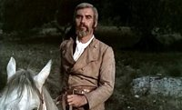
Esta pasada madrugada el actor asturiano Frank Braña, cuyo verdadero nombre era Francisco Braña Pérez, falleció en el hospital Puerta de Hierro Majadahonda debido a una insuficiencia pulmonar. Tenía 77 años.
Braña empezó muy joven el cine siendo especialista, trabajo que consiguió después de ser chófer y minero. Su primera aparición fue en ‘Café de Chinitas’ (Gonzalo Delgrás, 1960), a la que siguieron muchas intervenciones en coproducciones filmadas en España, tal es el caso de ‘Rey de reyes’ (‘King of Kings’, Nicholas Ray, 1961) o los cuatro westerns de Sergio Leone ‘Por un puñado de dólares’ (‘Per un pugno di dollari’, ‘La muerte tenía un precio’ (‘Per cualche dollaro in più’, 1965), ‘El bueno, el feo y el malo’ (‘Il buono, il brutto, il cattivo’, 1966) y ‘Hasta que llegó su hora’ (‘C´era una volta il West’, 1968), convirtiéndose en un rostro muy popular dentro del injustamente subvalorado género del spaghetti western, rodando infinidad de films, siempre de secundario y a veces ni acreditado.
Tal y como me lo ha definido Carlos Aguilar, un auténtico experto en el subgénero:
Braña, mediante su rigidez corporal y expresión granítica, con esas cejas inmensas y pelo prematuramente encanecido, contribuyó con dignos papeles de reparto a configurar la tipología de un período irrepetible del cine europeo: las coproducciones de género de los años sesenta-setenta
Y así fue, su presencia, inolvidable por su físico era de las que se quedaba retenidas en la memoria. Escribió un libro titulado ‘Morir con dignidad en el cine’, por la cantidad de veces que tuvo que morir en la ficción. Cuando se le preguntaba el porqué de su nombre en inglés decía que era porque lo español no estaba bien visto en aquellos años y lo de fuera sí. Su última aparición en cine fue en ‘Tiovivo c. 1950’ (José Luis Garci, 2004), tras lo cual se retiró debido a la silicosis, herencia de sus años en la mina. Hasta siempre Frank
Vía | ABC
'El cambiazo', valora lo que tienes
Mon, 13 Feb 2012 20:57:25 GMT
-No puedo tener sexo con mi esposa, ni con otras mujeres. ¿Qué demonios es esto? -Matrimonio.
‘El cambiazo’ (‘The Change-Up’) es la última propuesta de un subgénero que en Estados Unidos se conoce como “body swap“, esto es, “cambio de cuerpo”. Por arte de magia (dependiendo de la pericia del guionista la excusa será más o menos vaga), la mente de un personaje se traslada durante un tiempo al recipiente de otro individuo con una personalidad o una vida muy diferente, y la comedia está servida; a veces se da una vuelta de tuerca a esta idea y el resultado es que dos personajes muy dispares intercambian sus cuerpos y sus vidas. El planteamiento puede dar mucho juego con un guion ingenioso y los actores adecuados (no necesariamente especialistas en el género), sin embargo lo más común es que desemboque en una sucesión de bromas simplonas, situaciones escatológicas y ridículas sobreactuaciones, con un empalagoso final en el que todos aprenden una valiosa lección (a grandes rasgos es lo mismo que ocurre con la inmensa mayoría de productos cómicos de la industria norteamericana). Ahí tenemos los ejemplos de ‘¡Este cuerpo no es el mío! (‘The Hot Chick’, 2002) o ‘Ponte en mi lugar’ (‘Freaky Friday’, 2003), dos tonterías que hicieron mucho dinero en taquilla.
La que nos ocupa hoy se amolda al esquema comentado, solo busca entretener a un público fácil dispuesto a reírse con lo mínimo, y no ha supuesto una gran alegría para sus productores (que han necesitado la recaudación internacional para recuperar la inversión) porque la película ha costado más de 50 millones de dólares, un presupuesto desmesurado para un producto de estas características, y desde luego para las necesidades de la historia que se narra (de personajes corrientes, sin secuencias de acción ni espectaculares explosiones). Los guionistas de la taquillera ‘Resacón en Las Vegas’ (‘The Hangover’, 2009), Jon Lucas y Scott Moore, son los han escrito ‘El cambiazo’, en la que los protagonistas son dos viejos amigos, un hombre de familia con un empleo absorbente y un soltero con mucho tiempo libre y chicas diferentes en su cama cada semana (tiene que ser así, dos personajes en situaciones opuestas). Quedan una noche para tomar unas copas y ponerse al día (ahí se caer en el error de repetir información al espectador); cuando sienten la necesidad de descargar todo el líquido consumido, orinan en una fuente en mitad de un parque. ¡Una fuente es mágica! Pues sí, para qué complicarse más… La escultura de una mujer parecida a Lily Cole escucha a estos dos individuos expresar que les gustaría vivir la vida del otro, así que les concede el deseo. Ahí empieza realmente la película, que es más divertida de lo que parece a simple vista.
‘El cambiazo’ arranca presentando la situación de Mitch (Jason Bateman) de una manera que hace que el espectador entienda su estrés y su deseo por escapar, por ocupar la vida de otro. En la primera escena, oímos el llanto de los bebés, y la esposa recuerda que le toca encargarse a él; Mitch se levanta medio dormido y atiende a los críos, recibiendo una dosis de “sirope de chocolate” en pleno rostro (humor fino). Sin tiempo para descansar, toca ir al trabajo (es abogado), en un momento crucial porque está en juego una fusión empresarial y su participación es esencial, se está jugando la solución económica de su futuro. Cuando llega a casa le esperan más tareas y una relación monótona y apagada con su mujer (Leslie Mann), que le recuerda que habían acordado dedicar un rato semanal para hablar. Mitch contesta que no puede porque ha quedado con su mejor amigo, al que no ve desde hace tiempo. De éste, Dave (Ryan Reynolds), vemos que tiene todo el tiempo del mundo (es actor pero apenas trabaja), un apartamento desordenado y un padre (Alan Arkin) al que no desea ver. Más o menos, Mitch sería el típico adulto ocupadísimo y Dave el eterno joven que no quiere responsabilidades. Pero esto suena demasiado light y familiar, cuando lo que está de moda es la comedia gamberra y subida de tono. Así que los guionistas insertan en la historia una buena dosis de contenido sexual.
Cuando los dos amigos se reúnen, y repasan su vida, la conversación se desvía al sexo y todo queda en que Dave se acuesta con muchas mujeres, por tanto, es más feliz. Punto. Todo lo demás es absolutamente secundario. Mitch incluso se acuerda de una atractiva compañera de la oficina (Olivia Wilde), como si la vida de casado le hubiera privado de todo lo bueno. Estando borracho, y de cachondeo, se entiende que deseara la vida de Dave, pero lo de éste es incomprensible ya que nunca se queja de ningún aspecto de su día a día. Pero a la mañana siguiente Mitch es Dave y Dave es Mitch. Cuando intentan arreglarlo, la fuente ha desaparecido, y mientras la encuentran los dos amigos acuerdan tratar de no arruinar la vida del otro. Tal como nos lo han presentado antes, el casado tiene ahora la oportunidad de liarse con quien quiera, y tiempo libre para hacer todas las estupideces que se le ocurran, mientras que el otro… bueno, está jodido. Sin embargo, uno de los grandes aciertos de ‘El cambiazo’ es que la vida de Dave no es exactamente la que se esperaba Mitch (ni el espectador), dando lugar a varias situaciones cómicas, como lo del rodaje de la película erótica o el encuentro con la cita de los martes; por suerte no tiene que hacer demasiado y poco a poco va relajándose y acostumbrándose a su nuevo cuerpo. También queda con la chica del trabajo (por supuesto, disponible y comprensiva al 110%) y es entonces cuando se plantea su felicidad.
Toda la trama del falso Dave está más o menos bien resuelta (aunque para ser una comedia gamberra el personaje se limita demasiado), mientras que la otra es más torpe y tiene menos interés. En tiempo récord, el falso Mitch no solo se las apaña para cuidar de sus hijos (a los bebés los domina, la niña pequeña lo adora) sino que también se convierte en el profesional que necesitaba la empresa; y curiosamente se olvida del sexo (de nuevo, los guionistas se cortan bastante). Como es de esperar, tras los respectivos viajes de aprendizaje, los protagonistas asumen sus errores y se muestran ansiosos por recuperar sus antiguas vidas y disfrutarlas como nunca. La película de David Dobkin (cuya puesta en escena es, en el mejor de los casos, convencional) parte de un libreto simple y previsible, pensado solo para el público masculino, cuenta con actores que parecen más preocupados por divertirse durante el rodaje que por actuar (Reynolds y Bateman nunca consiguen replicar los gestos o el modo de hablar del otro, a diferencia de John Travolta y Nicolas Cage en la película de John Woo) y a pesar de su envoltorio es una historia muy tradicional. Pero de alguna manera, funciona, entretiene. No miras el reloj, no te aburres. Y cuando aparecen los créditos finales sientes que te han transmitido la idea fundamental de la película: valora lo que tienes, no lo descuides. Es un buen mensaje.
'Abraham Lincoln: Cazador de vampiros', tráiler
Mon, 13 Feb 2012 16:34:14 GMT
¿Eres un patriota o un vampiro?
Ya habíamos visto un par de carteles, hoy 20th Century Fox ha lanzado el primer tráiler de la peculiar producción de acción y terror ‘Abraham Lincoln: Cazador de vampiros’ (‘Abraham Lincoln: Vampire Hunter’), basada en la novela de Seth Grahame-Smith. Está producida por Tim Burton y es la nueva película como director de Timur Bekmambetov, responsable de la puesta en escena de ‘Guardianes de la noche’ (2004) y ‘Wanted’ (2008), entre otras. Con este hombre al mando y ese inequívoco título, os podéis imaginar lo que muestra el vídeo. Os diré algo: no decepciona.
Simon Kinberg y Grahame-Smith firman el guion de la película, en la que se nos cuenta la vida oculta del decimosexto presidente de los Estados Unidos, Abraham Lincoln, quien se convirtió en un experto cazador de vampiros tras descubrir que su madre fue asesinada por una de estas criaturas (que por lo visto en el vídeo no son cursis ni brillan a la luz del día). Henry Jackman se encarga de la música, Caleb Deschanel (padre de Emily y Zooey) de la fotografía; Benjamin Walker (en el papel protagonista), Mary Elizabeth Winstead, Rufus Sewell, Anthony Mackie, Dominic Cooper y Alan Tudyk son los nombres más relevantes del elenco de ‘Abraham Lincoln: Cazador de vampiros’, que se estrenará en España el 20 de julio, un mes más tarde que en EE.UU. (en salas 2D y 3D). ¿Vais a verla o preferís esperar al biopic dirigido por Steven Spielberg?
Actualización: Ha aparecido otra versión del tráiler, con otro montaje y unos segundos más, lo tenéis a continuación.
PD: Asylum ya prepara su propia versión, ‘Abraham Lincoln vs. Zombies’. No es broma, el primer cartel lo podéis ver aquí.
Berlinale 2012: 'Captive' recibe aplausos, 'Meteora' provoca bostezos
Mon, 13 Feb 2012 02:29:38 GMT
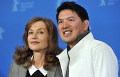
No era actuar, sino reaccionar. Rodamos casi sin guion, sin saber a qué lugar nos llevarían al día siguiente, dónde o cuándo oiríamos los siguientes disparos. La idea era sentirse como un rehén.
(Isabelle Huppert)
El plato fuerte de la cuarta jornada de la Berlinale 2012 era ‘Captive’, la nueva película del filipino Brillante Mendoza, uno de los cineastas más mimados por los festivales de todo el mundo y claro favorito para el Oso de Oro. Su último trabajo está basado en un hecho real ocurrido en su país en 2001, gira en torno a una voluntaria cristiana que es secuestrada por la guerrilla islámica Abu Sayaf y retenida durante un año en la jungla. Isabelle Huppert encarna a la protagonista y ya suena como favorita para lograr el premio a la mejor actriz. El crítico de ScreenDaily destaca la cautivadora interpretación de Huppert y el retrato que el director hace de los secuestradores, destacando su humanidad en lugar de convertirlos en fanáticos salvajes, como harían en Hollywood. Por su parte, en Filmin comentan que la película recibió una merecida ovación, y subrayan el realismo con el que Mendoza introduce al espectador en un conflicto que se plasma de manera objetiva. Cine-Vue incide en el gran trabajo de Huppert y aplaude la atmósfera lograda por el realizador filipino pero critica la falta de ritmo, que la historia se vuelve repetitiva y la labor del resto del reparto, menos convincente que la protagonista.
La otra película de la sección competitiva presentada durante el cuarto día del certamen fue ‘Meteora’, dirigida por Spiros Stathoulopoulos (de madre colombiana y padre griego). Theo Alexander y Tamila Koulieva dan vida a dos monjes ortodoxos que viven en un aislamiento casi absoluto, hasta que descubren que pueden comunicarse a través de unos espejos orientados a sus respectivas celdas. El crítico de HollywoodReporter expone lo que muchos estaréis pensando: que es una película aburrida. Comenta que la fotografía es estupenda pero que el director abusa de largas tomas y silencios, y que incluye unos desafortunados extractos animados para hacer aún más evidente el dilema entre la creencia religiosa y el deseo. En la crítica de Variety se habla de bellas imágenes y se elogia la animación, pero también considera el film un fracaso narrativo del realizador, concluyendo que no acierta a comunicar nada valioso al espectador. El profesional enviado a Berlín por ScreenDaily vuelve a destacar la hermosas localizaciones y el tratamiento de la luz, el único problema, dice, es que la película resulta desesperante. No parece favorita para lograr premios importantes, pero nunca se sabe.

El viernes os dejaba el tráiler y el cartel de ‘Iron Sky’, esa peculiar comedia de ciencia-ficción sobre un ejército nazi que ataca la Tierra tras permanecer escondido en la cara oculta de la Luna desde 1945; Timo Vuorensola es el responsable de la película, que ya se ha presentado en la Berlinale, por supuesto en una sección fuera de concurso. El crítico de ScreenDaily dice que la película es muy divertida y bastante espectacular teniendo en cuenta el escaso presupuesto (unos 7 millones de euros); apunta que los fans del género fantástico van a disfrutarla mucho. Sin embargo a los acreditados de TwitchFilm y FilmSchoolRejects les ha decepcionado. El primero señala que un gran problema de la película es que ha estado tanto tiempo gestándose que la parodia política ha perdido actualidad, destaca también los efectos visuales y no la considera desastrosa pero dice que al guion le falta ingenio y audacia; al segundo le ha parecido directamente una basura, solo salva un par de bromas. Avisados quedamos. Probablemente se verá en Sitges antes de llegar a los cines o el mercado doméstico.
PD: Tengo pendiente comentaros lo que se ha dicho sobre ‘Aujourd’hui’, ‘A Moi Seule’, ‘Bárbara’ y ‘Cesare Deve Morire’, cuatro títulos que aspiran a entrar en el palmarés de esta edición.
Berlinale 2012: 'Dictado', del español Antonio Chavarrías, se aleja del Oso de Oro
Sun, 12 Feb 2012 18:36:18 GMT
Continuamos con el repaso a lo más destacado del Festival de Berlín 2012, inaugurado el pasado jueves con la presentación de la francesa ‘Les adieux à la Reine’. En primer lugar hay que hablar de ‘Dictado’ (‘Childish Games’ en el mercado internacional), la película española que compite por el Oso de Oro. Se trata de un thriller psicológico dirigido por Antonio Chavarrías (‘El hundimiento del Titanic’, ‘Las vidas de Celia’) y protagonizado por Juan Diego Botto, Bárbara Lennie y la debutante Mágica Pérez (en la imagen de arriba junto al director). En palabras de Chavarrías, la película es un “cuento oscuro” que gira en torno a una niña perdida y la de que “el mal puede nacer de la inocencia”.
No ha convencido. El crítico de ScreenDaily dice que no da miedo, que es “mecánica” y que no engancha; aun así, parece ser que el arranque es interesante y que hay buenas ideas (sacadas de ‘Vértigo’ y ‘Carrie’, según el cronista). Por su parte, Variety califica de comercial la película, que funciona más o menos bien hasta el final, que no le gusta nada; habla bien de Botto, mal de Pérez y sugiere que Chavarrías critica el sistema educativo español. El enviado de Eyeforfilm explica que el film está lleno de tópicos, lo que la hace muy previsible, también elogia el trabajo de Botto y dice que falla la niña. ¿Significa esto que ‘Dictado’ se queda sin opciones de premio? No. Es muy probable que no se lleve nada importante, pero la reacción de la prensa/crítica no debe tener ninguna relación con el palmarés, que lo decide el jurado. Ya veremos qué ocurre. La película se estrena en España el 9 de marzo, os dejo el tráiler a continuación por si tenéis curiosidad.
Otros dos títulos que se han presentado en Berlín y que han levantado mucha expectación son ‘Tan fuerte, tan cerca’ (‘Extremely Loud and Incredibly Close’) y ‘En tierra de sangre y miel’ (‘In the Land of Blood and Honey’); ninguna de las dos compite por galardón alguno y están en la programación simplemente para atraer la atención de los medios. La primera, dirigida por Stephen Daldry (‘Billy Elliot’, ‘Las horas’), con Tom Hanks, Sandra Bullock, Viola Davis y Max Von Sydow en el reparto, se estrenó el 25 de diciembre en Estados Unidos y fracasó en su intento por lograr un buen puñado de nominaciones a los Oscar (solo aspira a dos y no parece que vaya a llevarse ninguna estatuilla). Es una adaptación de la novela de Jonathan Safran Foer y gira en torno a un niño que debe resolver un misterio relacionado con una llave que le dejó su padre antes de morir en el atentado del 11-S. La crítica habló hace tiempo sobre la película, que tiene una puntuación de 4,6 en Metacritic; he leído que es demasiado sensiblera y comercial (lo que encaja con el tráiler), ya lo comprobaremos, llegará a nuestras carteleras el 16 de marzo.
Antes, el 2 de marzo, se estrenará aquí ‘En tierra de sangre y miel’, la ópera prima de Angelina Jolie, que visitó la Berlinale junto a su pareja, un chico llamado Brad Pitt o Brad Bird o algo así. El primer trabajo tras las cámaras de Jolie, que fue nominado al Globo de Oro como producción de habla no inglesa y se estrenó en salas estadounidenses el pasado mes de diciembre, se centra en la dramática historia de amor entre un serbio y una bosnia que se encuentran en bandos opuestos cuando estalla la Guerra de los Balcanes de los años 90. Zana Marjanovic y Goran Kostic encabezan el desconocido elenco de esta romántica y bélica película que tampoco ha entusiasmado a la prensa especializada. En Metacritic tiene una valoración de 5,6 sobre 10, podéis leer comentarios de todo tipo. El crítico de Guardian, que debe ser de los pocos que ha visto la película en Berlín, aplaude la puesta en escena de Jolie (“carente de florituras”) y señala que las imágenes transmiten pasión y seriedad, que está lejos de ser el simple capricho de una estrella. Esperemos que sea eso lo que nos encontremos, el tráiler no pintaba nada mal.
PD: Más tarde os dejo otro artículo sobre el festival, incluyendo las reacciones que ha despertado ‘Iron Sky’.
Joseph Gordon-Levitt protagonizará su debut como director junto a Scarlett Johansson
Sun, 12 Feb 2012 12:47:16 GMT
Otro proyecto para Scarlett Johansson. La semana pasada os informaba que la actriz encabezará el reparto del nuevo trabajo de John Carney (‘Once’); recientemente se ha sabido que Johansson también protagonizará una comedia romántica junto a Joseph Gordon-Levitt (ésta es la razón por la que se vieron a finales del año pasado, algo que la prensa rosa tradujo enseguida como una relación sentimental). La película no tiene título oficial todavía y será la ópera prima del actor, que ha declarado lo siguiente:
“He pasado un año trabajando con Christopher Nolan, Rian Johnson, Steven Spielberg… y me he esforzado al máximo por prestar atención. También llevo bastante tiempo haciendo cortometrajes, he dirigido un montón, y en gran parte ése es el motivo de que me sienta tan cómodo y confiado”.
El guion de la película es del propio Gordon-Levitt, que asegura que es su mejor historia desde que empezó a escribir a los 20 años. El protagonista de ‘(500) días juntos’ (’(500) Days of Summer’) no ha querido desvelar detalles de la trama pero sí que, a grandes rasgos, se centra en un moderno Don Juan y la aventura en la que se embarca para dejar de ser un “capullo egoísta” (palabras del actor). Está previsto que comience el rodaje a mediados de abril, por lo que Gordon-Levitt podría quedarse fuera de la nueva película de Quentin Tarantino, el western ‘Django Unchained’, en la que iba a interpretar un personaje secundario. Ya veremos, seguro que Tarantino no tiene problemas en encontrar a un sustituto tan competente o más para el papel.
PD: Este año podremos ver a Gordon-Levitt en cuatro cinco películas: ’50/50’, ‘El caballero oscuro: La leyenda renace’ (‘The Dark Knight Rises’), ‘Premium Rush’, ‘Looper’ y ‘Lincoln’.
Vía | Deadline
Whitney Houston nos ha dejado
Sun, 12 Feb 2012 02:42:14 GMT
La noticia está corriendo como la pólvora durante esta madrugada. Whitney Houston ha fallecido hace unas horas según ha anunciado el publicista de la cantante y actriz Kristen Foster, quien no ha aclarado ni el motivo de la muerte ni el lugar. Imagino que lo sabremos en los próximos días. Houston tenía 48 años —a ver cuánto tardan los cortos de mente en hablar de “la maldición de los 48” o chorradas similares—.
Dejando a un lado su carrera como cantante —no necesita presentación para ninguno de vosotros, y podemos afirmar sin que nos tiemble la mano, que poseía en su momento de gloria una de las mejores voces que ha habido para la canción, otro tema es que lo desaprovechase completamente—, y los problemas, severos, con las drogas y su matrimonio, Houston interpretó en cine unos pocos papeles. Debutó en pantalla grande con ‘El guardaespaldas’ (‘The Bodyguard’, Mick Jackson, 1992), al lado de Kevin Costner, un exitazo de taquilla en todo el mundo, que partía de una historia original de Lawrence Kasdan, la cual imagino escribió un día mientras hacía sus necesidades en el cuarto de baño, porque si no, no me lo explico. La banda sonora del film fue el cuarto álbum más vendido de la historia, e introdujo a Houston en un arte en el que no destacaría demasiado.
‘Esperando un respiro’ (‘Waiitng to Exhale’, Forest Whitaker, 1995), y ‘La mujer del predicador’ (‘The Preacher´s Wife’, Penny Marshall, 1996) —bochornoso remake de la maravillosa ‘La mujer del obispo’ (‘The Bishop´s Wife’, Henry Koster, 1947)— completaron sus incursiones en el cine. Está pendiente de estreno ‘Sparkle’, remake del film de 1976 escrito por Joel Schumacher, en fase de post-producción y que ya imagino cómo venderán la película.
Hasta siempre Whitney.
Vía | El país
'Johnny English Returns', espía como puedas
Sat, 11 Feb 2012 11:36:37 GMT
La parodia es uno de los subgéneros de la comedia que más maltrato ha sufrido en los últimos años, ya que desde el tremendo éxito de ‘Scary movie’ se han realizado una notable cantidad de títulos con el ‘...movie’ como principal punto en común. El problema era que el otro gran punto de encuentro ha sido la alarmante falta de gracia debido a un humor tan básico y proclive al caca-culo-pedo-pis que daba vergüenza ajena la mera idea de sentarse a ver una de esas producciones. Es obvio que antes la parte del título que solían compartir esas producciones era el ‘como puedas’ aplicable a cualquier cosa contando en muchas ocasiones con la presencia de Leslie Nielsen, el gran representante del cine de parodias moderno americano, pero ese filón se agotó a finales de los noventa. Sin embargo, si nos remontamos un poco más en el tiempo es cuando encontramos las auténticas joyas del humor paródico como ‘El jovencito Frankenstein’, ‘La vida de Brian’ o ‘Un cadáver a los postres’ (la mejor de todas, pese a que algún lector no esté muy de acuerdo).
Es evidente que Rowan Atkinson es uno de los cómicos ingleses más importantes de las últimas décadas, siendo Mr. Bean su principal aportación al mundo de la comedia, aunque no la mejor, ya que para ello tenemos que remontarnos a la estupenda teleserie ‘La víbora negra’, que comenzó a protagonizar a principios de los 80. Sin embargo, si hay un personaje inglés de ficción de los últimos años que estuviese pidiendo a gritos una parodia como dios manda en su país de origen ése es James Bond (Leslie Nielsen ya lo hizo en la simpática ‘Espía como puedas’), y eso es algo que Atkinson aprovechó para la aparición de ‘Johnny English’, producción con la que quería aunar el éxito crítico y comercial, pero los primeros recibieron tan mal la película que el actor llegó a deprimirse por ello. ¿Cuál era entonces el motivo de hacer una segunda entrega, aprovechar que el personaje sí funcionó en el aspecto económico o intentar también una reconciliación con los críticos?
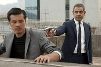
‘Johnny English Returns’ (en USA Reborn en lugar de Returns) comienza planteandonos un nuevo escenario, en el cual el protagonista tuvo que dejar el servicio como agente gubernamental tras una enorme metedura de pata varios años atrás en Mozambique, la cual se tradujo en el asesinato de su mandatario. Los flashbacks se convierte así en algo reiterado en el relato, los cuales comienzan estando bien dosificados, pero llega un punto en el que resulta vitales para la evolución de la historia y ahí es donde el delicado equilibrio que había conseguido el guión de Hamish McColl y Neal Purvis muestra síntomas de debilidad. No os creáis que estamos ante un ejemplo de cómo hacer una buena parodia, pero sí que el libreto había sabido desarrollar la historia con cierta convicción, quizá abusando de alguna broma recurrente (la anciana asiática que quiere asesinar a English), pero evitando que la estupidez se apodere de la historia, ya que eso es algo que confían al protagonista. No faltan las bromas de corte grosero/zafio, pero afortunadamente no son la tónica que sigue la función.
¿Hay giros de guión que cuesta creer que sucedan? Por lo general, eso es consecuencia de lo que decía, y es que hay veces que cuesta creer que alguien haga ciertas cosas, pero cuando está definido como alguien que coquetea peligrosamente con la idiocia no nos queda otra que aceptarlo. Además, la prácticamente invisible labor tras las cámaras de Oliver Parker, al que prácticamente nadie imaginaría haciendo algo así hace apenas unos años, ayuda a recalcar que el eje de la película es ver las reacciones que provoca el protagonista en todo lo que sucede a su alrededor. Atkinson es el amo todopoderoso de la función y el resto tienen que intentar potenciar su trabajo sin mancharlo con errores infantiles.

Atkinson demuestra que sigue teniendo una gran vis cómica, pero le pasa lo que a otros muchos humoristas, y es que tiene que encontrar a guionistas con talento que sepan canalizar lo que puede ofrecer, y en esta ocasión la cosa se queda en un punto intermedio. Es evidente que Atkinson tiene un rostro con mucha expresividad sin el imperativo de recurrir a un festival inagotable de muecas (sólo con sus ojos ya le bastaría), y eso es algo que está bien dosificado, con la salvedad de un momento en el que los excesos están justificados a través de lo que sucede en la película. Por lo demás, la línea maestra de su actuación es explotar la estupidez eficiente de su personaje, el cual es capaz de atrapar a un villano escurridizo para luego cometer una pifia tremenda cuando no podía ser más sencillo el prevenirlo. No es una actuación que vaya a ser recordada en los anales de la comedia, pero sí que merece cierto reconocimiento.
En el resto de personajes encontramos uno de los grandes aciertos de ‘Johnny English Returns’, y es que se ha sabido elegir un reparto que no sólo cause extraños desequilibrios (aún no entiendo a qué vino la elección de Natalie Imbruglia en la primera entrega), sino que, por lo general, aporte algo. El caso más destacado es el de Daniel Kaluuya, que interpreta al compañero de English, el cual refuerza la idea de que el protagonista es una especie de cruce entre James Bond y el Inspector Gadget, ya que intentando parodiar al segundo lo que encontramos es a alguien a quien nos cuesta creer que puedan acabar saliéndole bien las cosas, y es aquí donde aparece Kaluuya (al que algunos conoceréis por ser el protagonista del segundo episodio de la miniserie ‘Black Mirror’) para servir de paracaídas intelectual del protagonista. Además, se da la gozosa coincidencia de que ambos tienen bastante química, algo que siempre es de agradecer.
En general, ‘Johnny English Returns’ prefiere optar por la eficacia de un reparto con orígenes eminentemente televisivos, en el que no haya ningún gran nombre que pueda oscurecer al resto como sucedía con John Malkovich en la primera parte. La mayor salvedad a esta regla es la contratación de Rosamund Pike como el improbable interés romántico del protagonista, la cual no deja de transmitir la idea de haber sido contratada para reforzar los lazos con la saga del agente 007, ya que fue chica Bond en ‘Muere otro día’. También aparecen por allí Gillian Anderson (‘Expediente X’), Dominic West (‘The Wire (Bajo escucha)’) y Richard Schiff (‘El ala oeste de la Casablanca’) en una breve aparición, todos aportando su pequeño granito de arena. Eso sí, es una pena que los mejores apuntes relacionados con la aparición de Anderson (la modernización del servicio secreto inglés) estén en elementos exógenos a su personaje.
En definitiva, ‘Johnny English Returns’ es una muestra bastante digna del cine de parodias, pero sin caer en la celebración de la estupidez por la estupidez, sino que aprovecha la limitada inteligencia del protagonista para así justificar la progresión de la historia. No faltan las bromas que no terminan de funcionar, pero también las hay que justifican sobradamente el visionado de la película. Eso sí, no esperéis fino humor inglés, sino un tipo de comedia más física y elemental, la cual bien utilizada aún tiene reservado un lugar entre nuestras risas, en especial si está protagonizada por alguien con un gran timing cómico como el que tiene Rowan Atkinson. Una buena opción para pasar el rato sin complicarse mucho, es decir, un producto similar a la primera entrega, pero mejor.